B Ch. 1 Study 2 SI
B.1 Participants
B.1.1 Table
| critical (N=507) |
naive (N=536) |
Total (N=1043) |
|
|---|---|---|---|
| Gender | |||
| female | 245 (48.3%) | 268 (50.0%) | 513 (49.2%) |
| male | 259 (51.1%) | 268 (50.0%) | 527 (50.5%) |
| non-binary | 0 (0%) | 0 (0%) | 0 (0%) |
| other | 0 (0%) | 0 (0%) | 0 (0%) |
| prefer not to say | 3.00 (0.6%) | 0 (0%) | 3.00 (0.3%) |
| Racial/ethnic Identity | |||
| White | 405 (79.9%) | 447 (83.4%) | 852 (81.7%) |
| Latino | 11.0 (2.2%) | 13.0 (2.4%) | 24.0 (2.3%) |
| Black | 39.0 (7.7%) | 38.0 (7.1%) | 77.0 (7.4%) |
| Native American | 4.00 (0.8%) | 3.00 (0.6%) | 7.00 (0.7%) |
| Asian | 24.0 (4.7%) | 19.0 (3.5%) | 43.0 (4.1%) |
| Middle Eastern | 1.00 (0.2%) | 2.00 (0.4%) | 3.00 (0.3%) |
| Pacific Islander | 2.00 (0.4%) | 1.00 (0.2%) | 3.00 (0.3%) |
| Other race | 2.00 (0.4%) | 4.00 (0.7%) | 6.00 (0.6%) |
| Multiracial | 19.0 (3.7%) | 9.00 (1.7%) | 28.0 (2.7%) |
| Political orientation | |||
| liberal | 158 (31.2%) | 153 (28.5%) | 311 (29.8%) |
| moderate | 142 (28.0%) | 158 (29.5%) | 300 (28.8%) |
| conservative | 207 (40.8%) | 225 (42.0%) | 432 (41.4%) |
| Age | |||
| Mean (SD) | 54.5 (18.7) | 55.2 (17.5) | 54.9 (18.1) |
| Median [Min, Max] | 61.0 [18.0, 89.0] | 60.0 [18.0, 91.0] | 61.0 [18.0, 91.0] |
| Education | |||
| no college degree | 164 (32.3%) | 204 (38.1%) | 368 (35.3%) |
| college degree | 201 (39.6%) | 195 (36.4%) | 396 (38.0%) |
| grad degree | 142 (28.0%) | 137 (25.6%) | 279 (26.7%) |
| Adj. Income | |||
| Mean (SD) | 54100 (31400) | 51200 (31300) | 52600 (31300) |
| Median [Min, Max] | 49100 [4080, 150000] | 46000 [3780, 150000] | 46000 [3780, 150000] |


B.2 Punitive Support
Participants were asked rate the extent to which they oppose or favor the same four items, but this time on a scale from 1 (strongly oppose) to 7 (strongly favor):
- PUN_COPS: More police on the streets
- PUN_JAILTIME: Longer jail terms for those convicted of violent crimes
- PUN_PENALTY: Increase criminal penalties for non-violent crimes
- PUN_PRISONS: More prisons and fewer opportunities for parole
B.2.1 Distributions


Figure B.2: Distribution of Support for Punitive Policies by Condition in Study 2


B.2.3 OLS
| Dependent variable: | |||
| punitive.c | |||
| (1) | (2) | (3) | |
| Constant | -0.01 (0.03) | -0.98*** (0.13) | -0.97*** (0.13) |
| condition.f1 | -0.20*** (0.03) | -0.20*** (0.03) | -0.28*** (0.07) |
| political | 0.18*** (0.02) | 0.18*** (0.02) | |
| female | -0.06 (0.06) | -0.06 (0.06) | |
| race.f1 | 0.26* (0.11) | 0.24* (0.11) | |
| race.f2 | 0.39* (0.20) | 0.38 (0.20) | |
| race.f3 | -0.0004 (0.14) | -0.02 (0.14) | |
| race.f4 | 0.74* (0.33) | 0.76* (0.33) | |
| race.f5 | 0.28 (0.16) | 0.28 (0.16) | |
| race.f6 | -0.95* (0.48) | -0.92 (0.48) | |
| race.f7 | -0.44 (0.48) | -0.42 (0.48) | |
| race.f8 | -0.22 (0.35) | -0.22 (0.35) | |
| age.c | -0.04 (0.03) | -0.04 (0.03) | |
| edu3.f1 | 0.03 (0.05) | 0.03 (0.05) | |
| edu3.f2 | 0.01 (0.04) | 0.01 (0.04) | |
| adj_income.c | 0.005 (0.03) | 0.01 (0.03) | |
| condition.f1:political | 0.02 (0.02) | ||
| Observations | 1,043 | 1,043 | 1,043 |
| R2 | 0.04 | 0.17 | 0.17 |
| Adjusted R2 | 0.04 | 0.16 | 0.16 |
| Residual Std. Error | 0.98 (df = 1041) | 0.92 (df = 1027) | 0.92 (df = 1026) |
| F Statistic | 44.40*** (df = 1; 1041) | 14.00*** (df = 15; 1027) | 13.20*** (df = 16; 1026) |
| Note: | p<0.05; p<0.01; p<0.001 | ||
B.2.4 ANCOVA
| Term | SS | df | Statistic | p |
|---|---|---|---|---|
| (Intercept) | 46.262 | 1 | 54.897 | 0.000 |
| condition.f | 39.338 | 1 | 46.681 | 0.000 |
| political | 112.318 | 1 | 133.284 | 0.000 |
| female.f | 0.899 | 1 | 1.067 | 0.302 |
| race.f | 15.960 | 8 | 2.367 | 0.016 |
| age.c | 1.330 | 1 | 1.579 | 0.209 |
| edu3.f | 0.558 | 2 | 0.331 | 0.718 |
| adj_income.c | 0.017 | 1 | 0.020 | 0.888 |
| Residuals | 865.448 | 1027 | NA | NA |
| group1 | group2 | estimate | se | df | conf.low | conf.high | statistic | p | p.adj | p.adj.signif |
|---|---|---|---|---|---|---|---|---|---|---|
| Critical | Naive | -0.391 | 0.057 | 1027 | -0.503 | -0.279 | -6.83 | 0 | 0 | **** |
| Condition | EMM | SE | df | Conf.low | Conf.high |
|---|---|---|---|---|---|
| Critical | -0.434 | 0.113 | 1027 | -0.655 | -0.213 |
| Naive | -0.043 | 0.113 | 1027 | -0.265 | 0.179 |

(#fig:figs-pun-emm.plot-s2)Estimated Marginal Means of Support for Punitive Policies by Condition in Study 2
B.2.5 By Political


Figure B.4: Support for Punitive Policies by Condition and Political Orientation in Study 2
B.2.6 Punitive items


B.2.6.3 Pairwise
knitr::include_graphics(c("/Users/cintiahinojosa/Box/Dissertation/images/pun.cops_violin.stats_s2.png", "/Users/cintiahinojosa/Box/Dissertation/images/pun.penalty_violin.stats_s2.png"))
knitr::include_graphics(c("/Users/cintiahinojosa/Box/Dissertation/images/pun.jailtime_violin.stats_s2.png", "/Users/cintiahinojosa/Box/Dissertation/images/pun.prisons_violin.stats_s2.png"))B.3 Restorative Support
Participants were asked rate the extent to which they oppose or favor the same four items, but this time on a scale from 1 (strongly oppose) to 7 (strongly favor):
- REST_BANBOX: Remove criminal-history questions from employment applications
- REST_YOUTH: More community programs for young people
- REST_JOBS: Job programs for people in the inner-cities
- REST_FEDAID: More federal assistance to the poor
B.3.1 Distributions


Figure B.6: Distribution of Support for Restorative Policies by Condition in Study 2


B.3.3 ANCOVA
| Term | SS | df | Statistic | p |
|---|---|---|---|---|
| (Intercept) | 10.22 | 1 | 12.04 | 0.001 |
| condition.f | 3.75 | 1 | 4.42 | 0.036 |
| political | 126.07 | 1 | 148.42 | 0.000 |
| female.f | 6.18 | 1 | 7.28 | 0.007 |
| race.f | 10.74 | 8 | 1.58 | 0.126 |
| age.c | 1.06 | 1 | 1.25 | 0.264 |
| edu3.f | 10.93 | 2 | 6.43 | 0.002 |
| adj_income.c | 5.98 | 1 | 7.04 | 0.008 |
| Residuals | 872.35 | 1027 | NA | NA |
| group1 | group2 | estimate | se | df | conf.low | conf.high | statistic | p | p.adj | p.adj.signif |
|---|---|---|---|---|---|---|---|---|---|---|
| Critical | Naive | 0.121 | 0.057 | 1027 | 0.008 | 0.233 | 2.1 | 0.036 | 0.036 |
|
| Condition | EMM | SE | df | Conf.low | Conf.high |
|---|---|---|---|---|---|
| Critical | -0.215 | 0.113 | 1027 | -0.438 | 0.007 |
| Naive | -0.336 | 0.114 | 1027 | -0.559 | -0.113 |

(#fig:figs-rest-emm.plot-s2)Estimated Marginal Means of Support for Restorative Policies by Condition in Study 2
B.3.4 OLS
| Dependent variable: | |||
| Restorative policy support | |||
| (1) | (2) | (3) | |
| Constant | 4.99*** (0.05) | 5.89*** (0.17) | 5.87*** (0.19) |
| condition.fNaive | -0.15* (0.08) | -0.15* (0.07) | -0.10 (0.18) |
| political | -0.23*** (0.02) | -0.23*** (0.03) | |
| female | 0.20** (0.07) | 0.20** (0.07) | |
| race.fLatino | 0.21 (0.24) | 0.21 (0.24) | |
| race.fBlack | -0.01 (0.14) | -0.01 (0.14) | |
| race.fNative American | -0.40 (0.43) | -0.39 (0.43) | |
| race.fAsian | -0.08 (0.18) | -0.08 (0.18) | |
| race.fMiddle Eastern | -1.38* (0.65) | -1.37* (0.65) | |
| race.fPacific Islander | -0.53 (0.65) | -0.52 (0.65) | |
| race.fOther race | -1.05* (0.46) | -1.05* (0.46) | |
| race.fMultiracial | -0.15 (0.22) | -0.15 (0.22) | |
| age | 0.002 (0.002) | 0.002 (0.002) | |
| edu3.fcollege degree | -0.03 (0.09) | -0.03 (0.09) | |
| edu3.fgrad degree | 0.29** (0.10) | 0.29** (0.10) | |
| adj_income | -0.0000** (0.0000) | -0.0000** (0.0000) | |
| condition.fNaive:political | -0.01 (0.04) | ||
| Observations | 1,043 | 1,043 | 1,043 |
| R2 | 0.004 | 0.16 | 0.16 |
| Adjusted R2 | 0.003 | 0.15 | 0.15 |
| Residual Std. Error | 1.21 (df = 1041) | 1.12 (df = 1027) | 1.12 (df = 1026) |
| F Statistic | 3.94* (df = 1; 1041) | 13.30*** (df = 15; 1027) | 12.50*** (df = 16; 1026) |
| Note: | p<0.05; p<0.01; p<0.001 | ||
B.3.5 By Political


Figure B.8: Support for Restorative Policies by Condition and Political Orientation in Study 2
B.3.6 Restorative items
B.3.6.1 Table
| critical (N=507) |
naive (N=536) |
Overall (N=1043) |
|
|---|---|---|---|
| Restorative Policy Support | |||
| Mean (SD) | 4.99 (1.25) | 4.84 (1.17) | 4.92 (1.21) |
| Median [Min, Max] | 5.25 [1.00, 7.00] | 5.00 [1.00, 7.00] | 5.00 [1.00, 7.00] |
| Remove criminal-history questions from employment applications | |||
| Mean (SD) | 4.01 (1.74) | 3.51 (1.73) | 3.75 (1.75) |
| Median [Min, Max] | 4.00 [1.00, 7.00] | 3.00 [1.00, 7.00] | 4.00 [1.00, 7.00] |
| More community programs for young people | |||
| Mean (SD) | 5.68 (1.44) | 5.70 (1.33) | 5.69 (1.38) |
| Median [Min, Max] | 6.00 [1.00, 7.00] | 6.00 [1.00, 7.00] | 6.00 [1.00, 7.00] |
| Job programs for people in the inner-cities | |||
| Mean (SD) | 5.64 (1.38) | 5.66 (1.32) | 5.65 (1.35) |
| Median [Min, Max] | 6.00 [1.00, 7.00] | 6.00 [1.00, 7.00] | 6.00 [1.00, 7.00] |
| More federal assistance to the poor | |||
| Mean (SD) | 4.65 (1.79) | 4.51 (1.79) | 4.58 (1.79) |
| Median [Min, Max] | 5.00 [1.00, 7.00] | 5.00 [1.00, 7.00] | 5.00 [1.00, 7.00] |
B.3.6.2 Correlations


Figure B.9: Correlation Matrices of Restorative Policy Support Items in Study 2
B.3.6.3 Pairwise
knitr::include_graphics(c("/Users/cintiahinojosa/Box/Dissertation-Proposal/images/rest.banbox_violin.stats_s2.png", "/Users/cintiahinojosa/Box/Dissertation-Proposal/images/rest.fedaid_violin.stats_s2.png"))
knitr::include_graphics(c("/Users/cintiahinojosa/Box/Dissertation-Proposal/images/rest.youth_violin.stats_s2.png", "/Users/cintiahinojosa/Box/Dissertation-Proposal/images/rest.jobs_violin.stats_s2.png"))B.4 Symbolic Racism (Sum)
B.4.1 Table
| critical (N=507) |
naive (N=536) |
Overall (N=1043) |
|
|---|---|---|---|
| Symbolic Racism | |||
| Mean (SD) | 35.5 (12.2) | 37.5 (11.5) | 36.5 (11.9) |
| Median [Min, Max] | 37.0 [10.0, 64.0] | 38.0 [10.0, 64.0] | 37.0 [10.0, 64.0] |
| External Symbolic Racism | |||
| Mean (SD) | 16.1 (5.94) | 17.0 (5.58) | 16.6 (5.77) |
| Median [Min, Max] | 16.0 [5.00, 31.0] | 17.0 [5.00, 31.0] | 17.0 [5.00, 31.0] |
| Internal Symbolic Racism | |||
| Mean (SD) | 19.4 (6.90) | 20.6 (6.60) | 20.0 (6.77) |
| Median [Min, Max] | 20.0 [5.00, 33.0] | 21.0 [5.00, 33.0] | 20.0 [5.00, 33.0] |
B.4.2 Distributions


(#fig:figs-sr.s-dist-s2)Distribution of Support for Punitive Policies by Condition in Study 2

B.4.4 ANCOVA
| Term | SS | df | Statistic | p |
|---|---|---|---|---|
| (Intercept) | 25867.8 | 1 | 254.691 | 0.000 |
| condition.f | 795.9 | 1 | 7.836 | 0.005 |
| political | 34782.4 | 1 | 342.463 | 0.000 |
| female.f | 1164.3 | 1 | 11.464 | 0.001 |
| race.f | 2765.7 | 8 | 3.404 | 0.001 |
| age.c | 13.3 | 1 | 0.131 | 0.717 |
| edu3.f | 1104.8 | 2 | 5.439 | 0.004 |
| adj_income.c | 15.0 | 1 | 0.147 | 0.701 |
| Residuals | 104307.6 | 1027 | NA | NA |
| group1 | group2 | estimate | se | df | conf.low | conf.high | statistic | p | p.adj | p.adj.signif |
|---|---|---|---|---|---|---|---|---|---|---|
| Critical | Naive | -1.76 | 0.628 | 1027 | -2.99 | -0.526 | -2.8 | 0.005 | 0.005 | ** |
| Condition | EMM | SE | df | Conf.low | Conf.high |
|---|---|---|---|---|---|
| Critical | 34.7 | 1.24 | 1027 | 32.3 | 37.2 |
| Naive | 36.5 | 1.24 | 1027 | 34.1 | 38.9 |

(#fig:figs-sr.s-emm.plot-s2)Estimated Marginal Means of Symbolic Racism (Sum) by Condition in Study 2
B.4.5 OLS
| Dependent variable: | |||
| Symbolic Racism (Sum) | |||
| (1) | (2) | (3) | |
| Constant | 36.50*** (0.37) | 23.10*** (1.45) | 23.10*** (1.45) |
| condition.f1 | -1.01** (0.37) | -0.88** (0.31) | -0.50 (0.80) |
| political | 3.18*** (0.17) | 3.18*** (0.17) | |
| female | -2.23*** (0.66) | -2.25*** (0.66) | |
| race.f1 | 1.16 (1.25) | 1.22 (1.26) | |
| race.f2 | -0.61 (2.17) | -0.56 (2.17) | |
| race.f3 | -4.27** (1.56) | -4.18** (1.57) | |
| race.f4 | 7.67* (3.57) | 7.59* (3.58) | |
| race.f5 | 2.90 (1.80) | 2.93 (1.80) | |
| race.f6 | -1.84 (5.27) | -1.95 (5.28) | |
| race.f7 | 1.26 (5.28) | 1.19 (5.28) | |
| race.f8 | -5.74 (3.83) | -5.74 (3.83) | |
| age.c | -0.13 (0.35) | -0.13 (0.35) | |
| edu3.f1 | 1.53** (0.51) | 1.53** (0.51) | |
| edu3.f2 | 0.05 (0.43) | 0.06 (0.43) | |
| adj_income.c | -0.14 (0.37) | -0.15 (0.37) | |
| condition.f1:political | -0.09 (0.17) | ||
| Observations | 1,043 | 1,043 | 1,043 |
| R2 | 0.01 | 0.29 | 0.29 |
| Adjusted R2 | 0.01 | 0.28 | 0.28 |
| Residual Std. Error | 11.90 (df = 1041) | 10.10 (df = 1027) | 10.10 (df = 1026) |
| F Statistic | 7.53** (df = 1; 1041) | 28.50*** (df = 15; 1027) | 26.70*** (df = 16; 1026) |
| Note: | p<0.05; p<0.01; p<0.001 | ||
B.4.6 By Political
| Contrasts | Est. | SE | df | t | p |
|---|---|---|---|---|---|
| liberal Critical effect | -7.25 | 0.739 | 1024 | -9.81 | 0.000 |
| moderate Critical effect | -1.57 | 0.764 | 1024 | -2.05 | 0.209 |
| conservative Critical effect | 6.35 | 0.659 | 1024 | 9.63 | 0.000 |
| liberal Naive effect | -6.44 | 0.739 | 1024 | -8.71 | 0.000 |
| moderate Naive effect | 0.80 | 0.732 | 1024 | 1.09 | 0.818 |
| conservative Naive effect | 8.10 | 0.639 | 1024 | 12.68 | 0.000 |
| Contrasts | Est. | SE | df | t | p |
|---|---|---|---|---|---|
| liberal Critical effect | -7.25 | 0.739 | 1024 | -9.81 | 0.000 |
| moderate Critical effect | -1.57 | 0.764 | 1024 | -2.05 | 0.209 |
| conservative Critical effect | 6.35 | 0.659 | 1024 | 9.63 | 0.000 |
| liberal Naive effect | -6.44 | 0.739 | 1024 | -8.71 | 0.000 |
| moderate Naive effect | 0.80 | 0.732 | 1024 | 1.09 | 0.818 |
| conservative Naive effect | 8.10 | 0.639 | 1024 | 12.68 | 0.000 |
| Contrasts | Est. | SE | df | t | p |
|---|---|---|---|---|---|
| liberal Critical effect | -7.25 | 0.739 | 1024 | -9.81 | 0.000 |
| moderate Critical effect | -1.57 | 0.764 | 1024 | -2.05 | 0.209 |
| conservative Critical effect | 6.35 | 0.659 | 1024 | 9.63 | 0.000 |
| liberal Naive effect | -6.44 | 0.739 | 1024 | -8.71 | 0.000 |
| moderate Naive effect | 0.80 | 0.732 | 1024 | 1.09 | 0.818 |
| conservative Naive effect | 8.10 | 0.639 | 1024 | 12.68 | 0.000 |


(#fig:figs-sr.s-violin-s2)Plots of Symbolic Racism (Sum) by Condition and Political Orientation
B.5 Internal SR (Sum)
B.5.1 Table
| critical (N=507) |
naive (N=536) |
Overall (N=1043) |
|
|---|---|---|---|
| Internal Symbolic Racism | |||
| Mean (SD) | 19.4 (6.90) | 20.6 (6.60) | 20.0 (6.77) |
| Median [Min, Max] | 20.0 [5.00, 33.0] | 21.0 [5.00, 33.0] | 20.0 [5.00, 33.0] |
| External Symbolic Racism | |||
| Mean (SD) | 16.1 (5.94) | 17.0 (5.58) | 16.6 (5.77) |
| Median [Min, Max] | 16.0 [5.00, 31.0] | 17.0 [5.00, 31.0] | 17.0 [5.00, 31.0] |
B.5.2 Distributions


(#fig:figs-sri.s-dist-s2)Distribution of Support for Punitive Policies by Condition in Study 2
B.5.3 Pairwise


(#fig:figs2-sri.s-s2)Support for Internal Symbolic Racism (Sum) by Condition in Study 2
B.5.4 ANCOVA
| Term | SS | df | Statistic | p |
|---|---|---|---|---|
| (Intercept) | 7030.6 | 1 | 210.928 | 0.000 |
| condition.f | 298.5 | 1 | 8.956 | 0.003 |
| political | 10715.1 | 1 | 321.471 | 0.000 |
| female.f | 449.6 | 1 | 13.488 | 0.000 |
| race.f | 1177.7 | 8 | 4.417 | 0.000 |
| age.c | 56.8 | 1 | 1.704 | 0.192 |
| edu3.f | 210.3 | 2 | 3.154 | 0.043 |
| adj_income.c | 15.2 | 1 | 0.456 | 0.500 |
| Residuals | 34231.6 | 1027 | NA | NA |
| group1 | group2 | estimate | se | df | conf.low | conf.high | statistic | p | p.adj | p.adj.signif |
|---|---|---|---|---|---|---|---|---|---|---|
| Critical | Naive | -1.08 | 0.36 | 1027 | -1.78 | -0.371 | -2.99 | 0.003 | 0.003 | ** |
| Condition | EMM | SE | df | Conf.low | Conf.high |
|---|---|---|---|---|---|
| Critical | 18.4 | 0.710 | 1027 | 17.0 | 19.8 |
| Naive | 19.5 | 0.711 | 1027 | 18.1 | 20.8 |

(#fig:figs-sri.s-emm.plot-s2)Estimated Marginal Means of Internal Symbolic Racism (Sum) by Condition in Study 2
B.5.5 OLS
| Dependent variable: | |||
| Internal Symbolic Racism (Sum) | |||
| (1) | (2) | (3) | |
| Constant | 20.00*** (0.21) | 12.10*** (0.83) | 12.10*** (0.83) |
| condition.f1 | -0.59** (0.21) | -0.54** (0.18) | -0.39 (0.46) |
| political | 1.76*** (0.10) | 1.76*** (0.10) | |
| female | -1.38*** (0.38) | -1.39*** (0.38) | |
| race.f1 | 1.24 (0.72) | 1.27 (0.72) | |
| race.f2 | 0.25 (1.24) | 0.27 (1.24) | |
| race.f3 | -2.19* (0.89) | -2.15* (0.90) | |
| race.f4 | 5.36** (2.05) | 5.33** (2.05) | |
| race.f5 | 2.24* (1.03) | 2.25* (1.03) | |
| race.f6 | -4.30 (3.02) | -4.35 (3.03) | |
| race.f7 | -0.97 (3.02) | -0.99 (3.02) | |
| race.f8 | -3.18 (2.19) | -3.18 (2.20) | |
| age.c | -0.26 (0.20) | -0.26 (0.20) | |
| edu3.f1 | 0.71* (0.29) | 0.72* (0.29) | |
| edu3.f2 | -0.10 (0.25) | -0.10 (0.25) | |
| adj_income.c | -0.14 (0.21) | -0.15 (0.21) | |
| condition.f1:political | -0.03 (0.10) | ||
| Observations | 1,043 | 1,043 | 1,043 |
| R2 | 0.01 | 0.28 | 0.28 |
| Adjusted R2 | 0.01 | 0.27 | 0.27 |
| Residual Std. Error | 6.75 (df = 1041) | 5.77 (df = 1027) | 5.78 (df = 1026) |
| F Statistic | 7.96** (df = 1; 1041) | 27.10*** (df = 15; 1027) | 25.30*** (df = 16; 1026) |
| Note: | p<0.05; p<0.01; p<0.001 | ||
B.5.6 By Political
| Contrasts | Est. | SE | df | t | p |
|---|---|---|---|---|---|
| liberal Critical effect | -3.981 | 0.424 | 1024 | -9.382 | 0.000 |
| moderate Critical effect | -0.983 | 0.439 | 1024 | -2.241 | 0.136 |
| conservative Critical effect | 3.467 | 0.379 | 1024 | 9.156 | 0.000 |
| liberal Naive effect | -3.305 | 0.425 | 1024 | -7.784 | 0.000 |
| moderate Naive effect | 0.135 | 0.420 | 1024 | 0.321 | 0.999 |
| conservative Naive effect | 4.668 | 0.367 | 1024 | 12.724 | 0.000 |
| Contrasts | Est. | SE | df | t | p |
|---|---|---|---|---|---|
| liberal Critical effect | -3.981 | 0.424 | 1024 | -9.382 | 0.000 |
| moderate Critical effect | -0.983 | 0.439 | 1024 | -2.241 | 0.136 |
| conservative Critical effect | 3.467 | 0.379 | 1024 | 9.156 | 0.000 |
| liberal Naive effect | -3.305 | 0.425 | 1024 | -7.784 | 0.000 |
| moderate Naive effect | 0.135 | 0.420 | 1024 | 0.321 | 0.999 |
| conservative Naive effect | 4.668 | 0.367 | 1024 | 12.724 | 0.000 |
| Contrasts | Est. | SE | df | t | p |
|---|---|---|---|---|---|
| liberal Critical effect | -3.981 | 0.424 | 1024 | -9.382 | 0.000 |
| moderate Critical effect | -0.983 | 0.439 | 1024 | -2.241 | 0.136 |
| conservative Critical effect | 3.467 | 0.379 | 1024 | 9.156 | 0.000 |
| liberal Naive effect | -3.305 | 0.425 | 1024 | -7.784 | 0.000 |
| moderate Naive effect | 0.135 | 0.420 | 1024 | 0.321 | 0.999 |
| conservative Naive effect | 4.668 | 0.367 | 1024 | 12.724 | 0.000 |

(#fig:figs-sri.s-violin-s2)Plots of Internal Symbolic Racism (Sum) by Condition and Political Orientation
B.6 External SR (Sum)
B.6.1 Table
| critical (N=507) |
naive (N=536) |
Overall (N=1043) |
|
|---|---|---|---|
| External Symbolic Racism | |||
| Mean (SD) | 16.1 (5.94) | 17.0 (5.58) | 16.6 (5.77) |
| Median [Min, Max] | 16.0 [5.00, 31.0] | 17.0 [5.00, 31.0] | 17.0 [5.00, 31.0] |
B.6.2 Distributions


(#fig:figs-sre.s-dist-s2)Distribution of Support for Punitive Policies by Condition in Study 2
B.6.3 Pairwise


(#fig:figs2-sre.s-s2)Support for External Symbolic Racism (Sum) by Condition in Study 2
B.6.4 ANCOVA
| Term | SS | df | Statistic | p |
|---|---|---|---|---|
| (Intercept) | 5926.886 | 1 | 235.560 | 0.000 |
| condition.f | 119.541 | 1 | 4.751 | 0.030 |
| political | 6886.728 | 1 | 273.708 | 0.000 |
| female.f | 166.894 | 1 | 6.633 | 0.010 |
| race.f | 501.850 | 8 | 2.493 | 0.011 |
| age.c | 15.079 | 1 | 0.599 | 0.439 |
| edu3.f | 369.815 | 2 | 7.349 | 0.001 |
| adj_income.c | 0.001 | 1 | 0.000 | 0.995 |
| Residuals | 25840.196 | 1027 | NA | NA |
| group1 | group2 | estimate | se | df | conf.low | conf.high | statistic | p | p.adj | p.adj.signif |
|---|---|---|---|---|---|---|---|---|---|---|
| Critical | Naive | -0.682 | 0.313 | 1027 | -1.29 | -0.068 | -2.18 | 0.03 | 0.03 |
|
| Condition | EMM | SE | df | Conf.low | Conf.high |
|---|---|---|---|---|---|
| Critical | 16.4 | 0.616 | 1027 | 15.2 | 17.6 |
| Naive | 17.0 | 0.618 | 1027 | 15.8 | 18.3 |

(#fig:figs-sre.s-emm.plot-s2)Estimated Marginal Means of External Symbolic Racism (Sum) by Condition in Study 2
B.6.5 OLS
| Dependent variable: | |||
| External Symbolic Racism (Sum) | |||
| (1) | (2) | (3) | |
| Constant | 16.50*** (0.18) | 11.10*** (0.72) | 11.10*** (0.72) |
| condition.f1 | -0.42* (0.18) | -0.34* (0.16) | -0.10 (0.40) |
| political | 1.41*** (0.09) | 1.41*** (0.09) | |
| female | -0.84* (0.33) | -0.85** (0.33) | |
| race.f1 | -0.08 (0.62) | -0.04 (0.63) | |
| race.f2 | -0.86 (1.08) | -0.83 (1.08) | |
| race.f3 | -2.08** (0.78) | -2.03** (0.78) | |
| race.f4 | 2.31 (1.78) | 2.26 (1.78) | |
| race.f5 | 0.66 (0.90) | 0.68 (0.90) | |
| race.f6 | 2.47 (2.63) | 2.40 (2.63) | |
| race.f7 | 2.23 (2.63) | 2.19 (2.63) | |
| race.f8 | -2.57 (1.91) | -2.56 (1.91) | |
| age.c | 0.14 (0.17) | 0.13 (0.17) | |
| edu3.f1 | 0.81** (0.25) | 0.82** (0.25) | |
| edu3.f2 | 0.15 (0.22) | 0.16 (0.22) | |
| adj_income.c | 0.001 (0.19) | -0.002 (0.19) | |
| condition.f1:political | -0.06 (0.09) | ||
| Observations | 1,043 | 1,043 | 1,043 |
| R2 | 0.01 | 0.25 | 0.25 |
| Adjusted R2 | 0.004 | 0.24 | 0.24 |
| Residual Std. Error | 5.76 (df = 1041) | 5.02 (df = 1027) | 5.02 (df = 1026) |
| F Statistic | 5.53* (df = 1; 1041) | 23.40*** (df = 15; 1027) | 21.90*** (df = 16; 1026) |
| Note: | p<0.05; p<0.01; p<0.001 | ||
B.6.6 By Political
| Contrasts | Est. | SE | df | t | p |
|---|---|---|---|---|---|
| liberal Critical effect | -3.272 | 0.367 | 1024 | -8.92 | 0.000 |
| moderate Critical effect | -0.583 | 0.379 | 1024 | -1.54 | 0.516 |
| conservative Critical effect | 2.887 | 0.327 | 1024 | 8.82 | 0.000 |
| liberal Naive effect | -3.133 | 0.367 | 1024 | -8.54 | 0.000 |
| moderate Naive effect | 0.665 | 0.363 | 1024 | 1.83 | 0.321 |
| conservative Naive effect | 3.436 | 0.317 | 1024 | 10.83 | 0.000 |
| Contrasts | Est. | SE | df | t | p |
|---|---|---|---|---|---|
| liberal Critical effect | -3.272 | 0.367 | 1024 | -8.92 | 0.000 |
| moderate Critical effect | -0.583 | 0.379 | 1024 | -1.54 | 0.516 |
| conservative Critical effect | 2.887 | 0.327 | 1024 | 8.82 | 0.000 |
| liberal Naive effect | -3.133 | 0.367 | 1024 | -8.54 | 0.000 |
| moderate Naive effect | 0.665 | 0.363 | 1024 | 1.83 | 0.321 |
| conservative Naive effect | 3.436 | 0.317 | 1024 | 10.83 | 0.000 |
| Contrasts | Est. | SE | df | t | p |
|---|---|---|---|---|---|
| liberal Critical effect | -3.272 | 0.367 | 1024 | -8.92 | 0.000 |
| moderate Critical effect | -0.583 | 0.379 | 1024 | -1.54 | 0.516 |
| conservative Critical effect | 2.887 | 0.327 | 1024 | 8.82 | 0.000 |
| liberal Naive effect | -3.133 | 0.367 | 1024 | -8.54 | 0.000 |
| moderate Naive effect | 0.665 | 0.363 | 1024 | 1.83 | 0.321 |
| conservative Naive effect | 3.436 | 0.317 | 1024 | 10.83 | 0.000 |

(#fig:figs-sre.s-violin-s2)Plots of External Symbolic Racism (Sum) by Condition and Political Orientation
B.7 Symbolic Racism (mean)
B.7.1 Distributions


Figure B.10: Distribution of Support for Punitive Policies by Condition in Study 2


B.7.4 ANCOVA
| Term | SS | df | Statistic | p |
|---|---|---|---|---|
| (Intercept) | 60.949 | 1 | 85.085 | 0.000 |
| condition.f | 5.613 | 1 | 7.836 | 0.005 |
| political | 245.319 | 1 | 342.463 | 0.000 |
| female.f | 8.212 | 1 | 11.464 | 0.001 |
| race.f | 19.507 | 8 | 3.404 | 0.001 |
| age.c | 0.094 | 1 | 0.131 | 0.717 |
| edu3.f | 7.792 | 2 | 5.439 | 0.004 |
| adj_income.c | 0.106 | 1 | 0.147 | 0.701 |
| Residuals | 735.677 | 1027 | NA | NA |
| group1 | group2 | estimate | se | df | conf.low | conf.high | statistic | p | p.adj | p.adj.signif |
|---|---|---|---|---|---|---|---|---|---|---|
| Critical | Naive | -0.148 | 0.053 | 1027 | -0.251 | -0.044 | -2.8 | 0.005 | 0.005 | ** |
| Condition | EMM | SE | df | Conf.low | Conf.high |
|---|---|---|---|---|---|
| Critical | -0.151 | 0.104 | 1027 | -0.355 | 0.053 |
| Naive | -0.003 | 0.104 | 1027 | -0.208 | 0.201 |

(#fig:figs-sr-emm.plot-s2)Estimated Marginal Means of Symbolic Racism by Condition in Study 2
B.7.5 OLS
| Dependent variable: | |||
| Symbolic Racism | |||
| (1) | (2) | (3) | |
| Constant | -0.09* (0.04) | -0.92*** (0.13) | -0.88*** (0.15) |
| condition.fNaive | 0.17** (0.06) | 0.15** (0.05) | 0.08 (0.13) |
| political | 0.27*** (0.01) | 0.26*** (0.02) | |
| female | -0.19*** (0.06) | -0.19*** (0.06) | |
| race.fLatino | -0.15 (0.18) | -0.15 (0.18) | |
| race.fBlack | -0.46*** (0.11) | -0.45*** (0.11) | |
| race.fNative American | 0.55 (0.33) | 0.53 (0.33) | |
| race.fAsian | 0.15 (0.13) | 0.14 (0.13) | |
| race.fMiddle Eastern | -0.25 (0.49) | -0.27 (0.49) | |
| race.fPacific Islander | 0.01 (0.49) | -0.003 (0.49) | |
| race.fOther race | -0.58 (0.35) | -0.58 (0.35) | |
| race.fMultiracial | -0.14 (0.17) | -0.15 (0.17) | |
| age | -0.001 (0.002) | -0.001 (0.002) | |
| edu3.fcollege degree | -0.12 (0.07) | -0.12 (0.07) | |
| edu3.fgrad degree | -0.26** (0.08) | -0.26*** (0.08) | |
| adj_income | -0.0000 (0.0000) | -0.0000 (0.0000) | |
| condition.fNaive:political | 0.02 (0.03) | ||
| Observations | 1,043 | 1,043 | 1,043 |
| R2 | 0.01 | 0.29 | 0.29 |
| Adjusted R2 | 0.01 | 0.28 | 0.28 |
| Residual Std. Error | 1.00 (df = 1041) | 0.85 (df = 1027) | 0.85 (df = 1026) |
| F Statistic | 7.53** (df = 1; 1041) | 28.50*** (df = 15; 1027) | 26.70*** (df = 16; 1026) |
| Note: | p<0.05; p<0.01; p<0.001 | ||


B.8 Mediation by Symbolic Racism
B.8.1 punitive
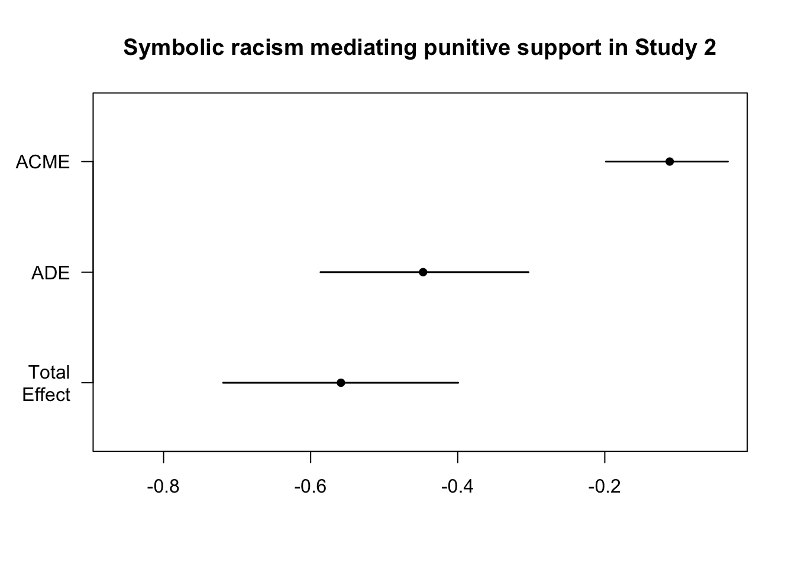
## NULL| Estimate | 95% CI Lower | 95% CI Upper | p-value | |
|---|---|---|---|---|
| ACME | -0.115 | -0.195 | -0.034 | 0.006 |
| ADE | -0.448 | -0.587 | -0.304 | 0.000 |
| Total Effect | -0.563 | -0.722 | -0.404 | 0.000 |
| Prop. Mediated | 0.204 | 0.065 | 0.337 | 0.006 |
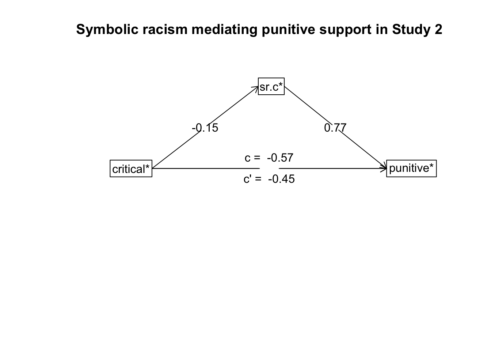
## Call: psych::mediate(y = punitive ~ critical + (sr.c) - political -
## female - white - age.c - college - adj_income.c, data = s2,
## main = "Symbolic racism mediating punitive support in Study 2")
##
## Direct effect estimates (traditional regression) (c') X + M on Y
## punitive* se t df
## Intercept 4.347 0.155 28.05 1034
## critical -0.455 0.072 -6.33 1034
## sr.c 0.767 0.042 18.31 1034
## Prob
## Intercept 0.00000000000000000000000000000000000000000000000000000000000000000000000000000000000000000000000000000000000000000000000000000000354
## critical 0.00000000035900000000000000105919056010250582644527383990862290374934673309326171875000000000000000000000000000000000000000000000000
## sr.c 0.00000000000000000000000000000000000000000000000000000000000000004546999999999999305352137623293798087945655350226194460599540356836
##
## R = 1.04 R2 = 1.07 F = -7365 on 2 and 1034 DF p-value: 1
##
## Total effect estimates (c) (X on Y)
## punitive* se t df
## Intercept 3.576 0.172 20.85 1035
## critical -0.567 0.082 -6.89 1035
## Prob
## Intercept 0.00000000000000000000000000000000000000000000000000000000000000000000000000000000745
## critical 0.00000000000956700000000000073512452111519592111606169471116345448535867035388946533
##
## 'a' effect estimates (X on M)
## sr.c se t df Prob
## Intercept -1.004 0.111 -9.08 1035 0.000000000000000000545
## critical -0.147 0.053 -2.76 1035 0.005878999999999999677
##
## 'b' effect estimates (M on Y controlling for X)
## punitive* se t df
## sr.c 0.767 0.042 18.3 1034
## Prob
## sr.c 0.0000000000000000000000000000000000000000000000000000000000000000455
##
## 'ab' effect estimates (through all mediators)
## punitive* boot sd lower upper
## critical -0.112 -0.112 0.041 -0.194 -0.032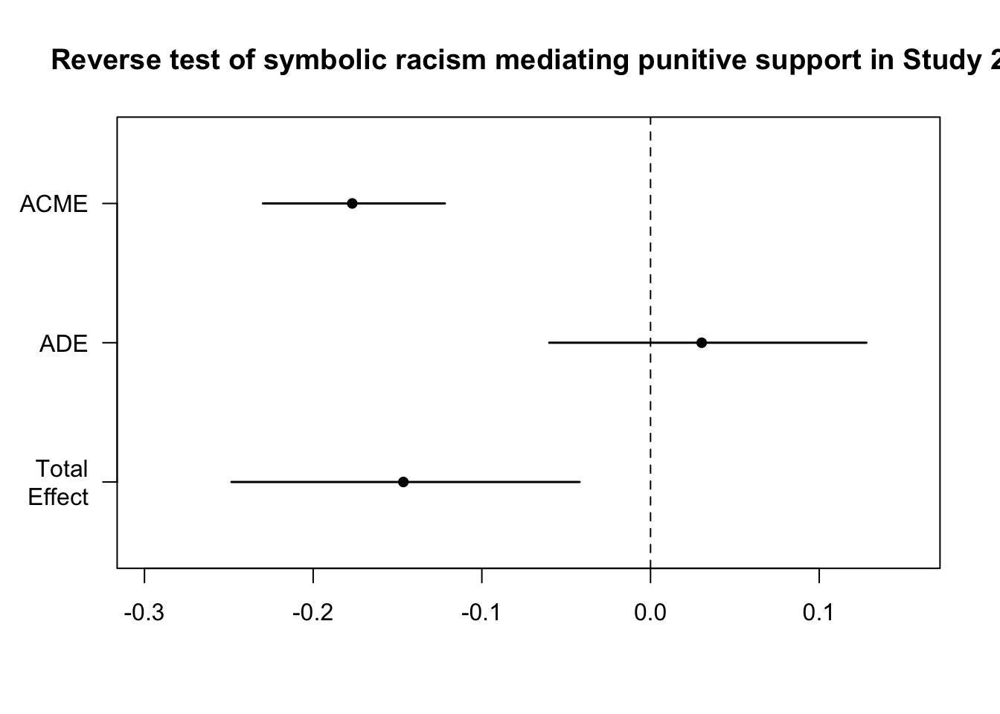
## NULL| Estimate | 95% CI Lower | 95% CI Upper | p-value | |
|---|---|---|---|---|
| ACME | -0.177 | -0.231 | -0.127 | 0.000 |
| ADE | 0.030 | -0.058 | 0.122 | 0.536 |
| Total Effect | -0.147 | -0.249 | -0.048 | 0.008 |
| Prop. Mediated | 1.204 | 0.726 | 3.115 | 0.008 |
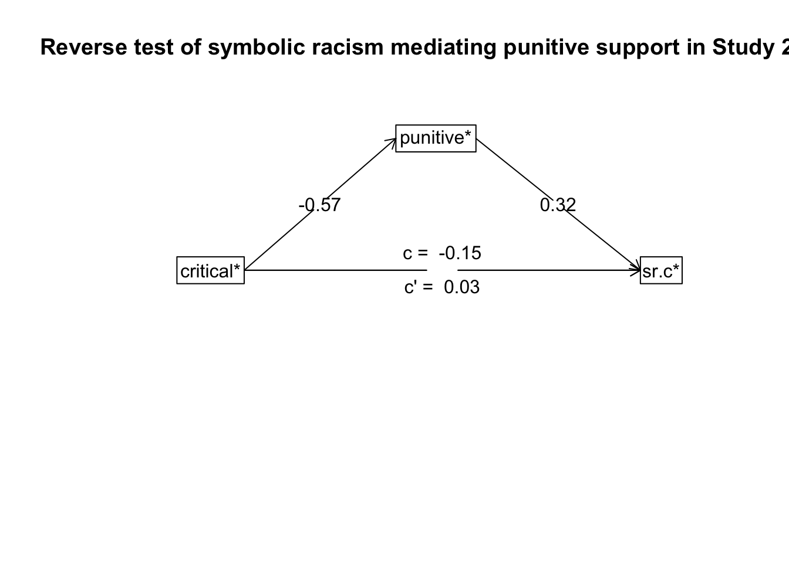
## Call: psych::mediate(y = sr.c ~ critical + (punitive) - political -
## female - white - age.c - college - adj_income.c, data = s2,
## main = "Reverse test of symbolic racism mediating punitive support in Study 2")
##
## Direct effect estimates (traditional regression) (c') X + M on Y
## sr.c* se t df
## Intercept -2.145 0.115 -18.718 1034
## critical 0.034 0.047 0.731 1034
## punitive 0.319 0.017 18.308 1034
## Prob
## Intercept 0.000000000000000000000000000000000000000000000000000000000000000000148
## critical 0.465200000000000002398081733190338127315044403076171875000000000000000
## punitive 0.000000000000000000000000000000000000000000000000000000000000000045470
##
## R = 0.562 R2 = 0.316 F = 239 on 2 and 1034 DF p-value: 0.0000000000000000000000000000000000000000000000000000000000000000000000000000000000000643
##
## Total effect estimates (c) (X on Y)
## sr.c* se t df Prob
## Intercept -1.004 0.111 -9.08 1035 0.000000000000000000545
## critical -0.147 0.053 -2.76 1035 0.005878999999999999677
##
## 'a' effect estimates (X on M)
## punitive se t df
## Intercept 3.576 0.172 20.85 1035
## critical -0.567 0.082 -6.89 1035
## Prob
## Intercept 0.00000000000000000000000000000000000000000000000000000000000000000000000000000000745
## critical 0.00000000000956700000000000073512452111519592111606169471116345448535867035388946533
##
## 'b' effect estimates (M on Y controlling for X)
## sr.c* se t df
## punitive 0.319 0.017 18.3 1034
## Prob
## punitive 0.0000000000000000000000000000000000000000000000000000000000000000455
##
## 'ab' effect estimates (through all mediators)
## sr.c* boot sd lower upper
## critical -0.181 -0.181 0.029 -0.239 -0.126B.8.2 restorative
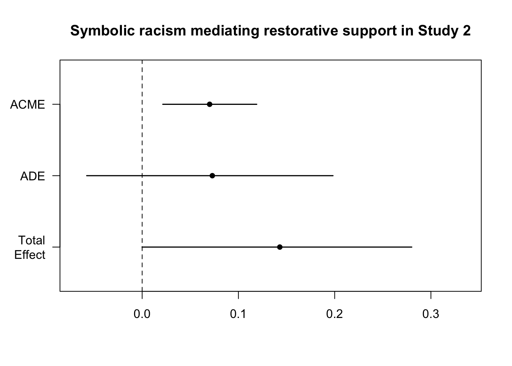
## NULL| Estimate | 95% CI Lower | 95% CI Upper | p-value | |
|---|---|---|---|---|
| ACME | 0.069 | 0.021 | 0.116 | 0.002 |
| ADE | 0.082 | -0.055 | 0.215 | 0.252 |
| Total Effect | 0.151 | 0.005 | 0.290 | 0.038 |
| Prop. Mediated | 0.439 | 0.070 | 2.609 | 0.040 |
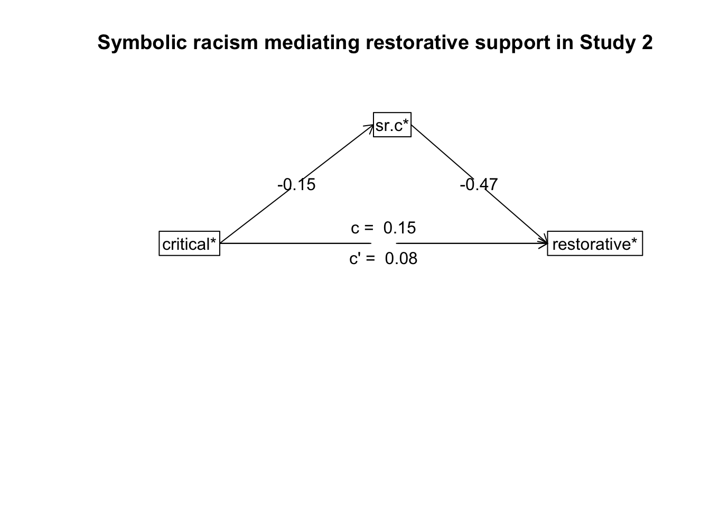
## Call: psych::mediate(y = restorative ~ critical + (sr.c) - political -
## female - white - age.c - college - adj_income.c, data = s2,
## main = "Symbolic racism mediating restorative support in Study 2")
##
## Direct effect estimates (traditional regression) (c') X + M on Y
## restorative* se t df
## Intercept 5.157 0.142 36.42 1034
## critical 0.078 0.066 1.19 1034
## sr.c -0.470 0.038 -12.27 1034
## Prob
## Intercept 0.000000000000000000000000000000000000000000000000000000000000000000000000000000000000000000000000000000000000000000000000000000000000000000000000000000000000000000000000000000000000000000145
## critical 0.235199999999999992406074511563929263502359390258789062500000000000000000000000000000000000000000000000000000000000000000000000000000000000000000000000000000000000000000000000000000000000000
## sr.c 0.000000000000000000000000000000020620000000000001249837818919812309846082069461465949441918604921817583886488746658079487805714791193167911842465400695800781250000000000000000000000000000000
##
## R = 1.03 R2 = 1.05 F = -10380 on 2 and 1034 DF p-value: 1
##
## Total effect estimates (c) (X on Y)
## restorative* se t df
## Intercept 5.629 0.146 38.6 1035
## critical 0.147 0.070 2.1 1035
## Prob
## Intercept 0.0000000000000000000000000000000000000000000000000000000000000000000000000000000000000000000000000000000000000000000000000000000000000000000000000000000000000000000000000000000000000000000000000000000000957
## critical 0.0361199999999999993294252931264054495841264724731445312500000000000000000000000000000000000000000000000000000000000000000000000000000000000000000000000000000000000000000000000000000000000000000000000000000
##
## 'a' effect estimates (X on M)
## sr.c se t df Prob
## Intercept -1.004 0.111 -9.08 1035 0.000000000000000000545
## critical -0.147 0.053 -2.76 1035 0.005878999999999999677
##
## 'b' effect estimates (M on Y controlling for X)
## restorative* se t df Prob
## sr.c -0.47 0.038 -12.3 1034 0.0000000000000000000000000000000206
##
## 'ab' effect estimates (through all mediators)
## restorative* boot sd lower upper
## critical 0.069 0.068 0.026 0.019 0.12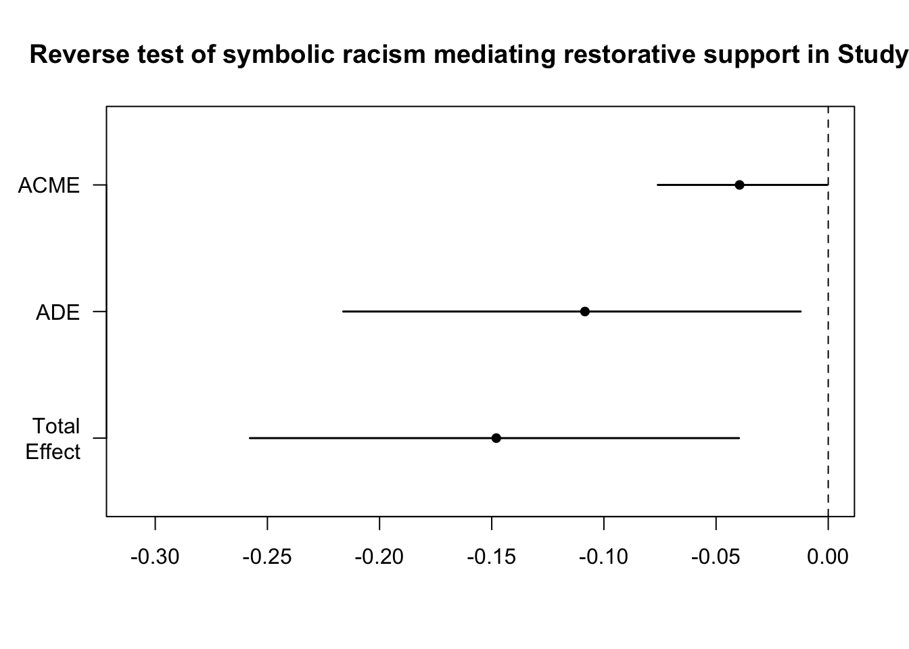
## NULL| Estimate | 95% CI Lower | 95% CI Upper | p-value | |
|---|---|---|---|---|
| ACME | -0.040 | -0.078 | -0.005 | 0.026 |
| ADE | -0.107 | -0.202 | -0.017 | 0.024 |
| Total Effect | -0.147 | -0.247 | -0.051 | 0.008 |
| Prop. Mediated | 0.266 | 0.039 | 0.705 | 0.030 |
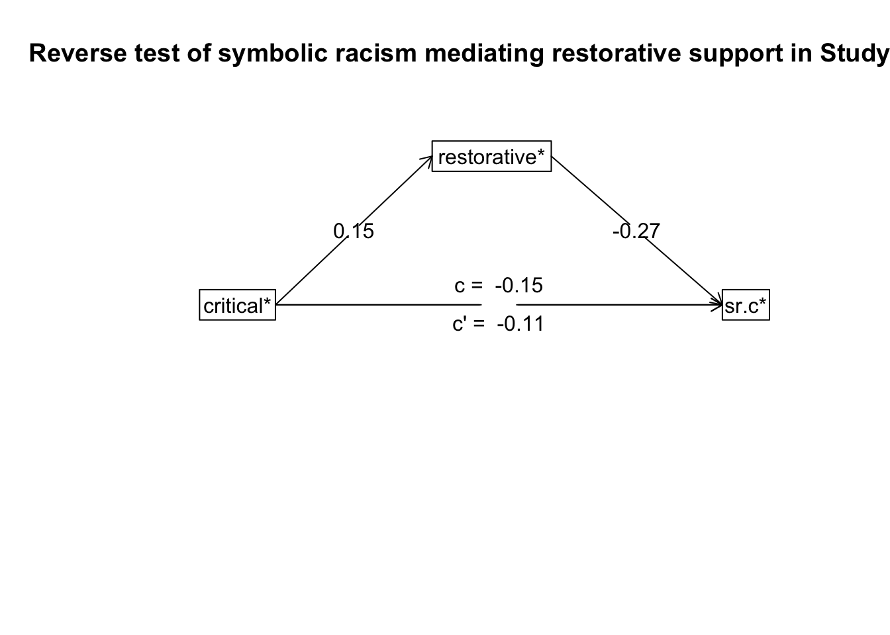
## Call: psych::mediate(y = sr.c ~ critical + (restorative) - political -
## female - white - age.c - college - adj_income.c, data = s2,
## main = "Reverse test of symbolic racism mediating restorative support in Study 2")
##
## Direct effect estimates (traditional regression) (c') X + M on Y
## sr.c* se t df Prob
## Intercept 0.519 0.162 3.21 1034 0.0013639999999999999780869730514610
## critical -0.107 0.050 -2.15 1034 0.0319499999999999992339461130086420
## restorative -0.271 0.022 -12.27 1034 0.0000000000000000000000000000000206
##
## R = 0.457 R2 = 0.209 F = 137 on 2 and 1034 DF p-value: 0.0000000000000000000000000000000000000000000000000000211
##
## Total effect estimates (c) (X on Y)
## sr.c* se t df Prob
## Intercept -1.004 0.111 -9.08 1035 0.000000000000000000545
## critical -0.147 0.053 -2.76 1035 0.005878999999999999677
##
## 'a' effect estimates (X on M)
## restorative se t df
## Intercept 5.629 0.146 38.6 1035
## critical 0.147 0.070 2.1 1035
## Prob
## Intercept 0.0000000000000000000000000000000000000000000000000000000000000000000000000000000000000000000000000000000000000000000000000000000000000000000000000000000000000000000000000000000000000000000000000000000000957
## critical 0.0361199999999999993294252931264054495841264724731445312500000000000000000000000000000000000000000000000000000000000000000000000000000000000000000000000000000000000000000000000000000000000000000000000000000
##
## 'b' effect estimates (M on Y controlling for X)
## sr.c* se t df Prob
## restorative -0.271 0.022 -12.3 1034 0.0000000000000000000000000000000206
##
## 'ab' effect estimates (through all mediators)
## sr.c* boot sd lower upper
## critical -0.04 -0.04 0.02 -0.08 -0.002B.9 Internal SR (mean)
B.9.1 Table
| critical (N=507) |
naive (N=536) |
Overall (N=1043) |
|
|---|---|---|---|
| Internal Symbolic Racism | |||
| Mean (SD) | 3.88 (1.38) | 4.11 (1.32) | 4.00 (1.35) |
| Median [Min, Max] | 4.00 [1.00, 6.60] | 4.20 [1.00, 6.60] | 4.00 [1.00, 6.60] |
| It's really a matter of some people not trying hard enough; if Black people would only try harder, they could be just as well off as whites. | |||
| Mean (SD) | 3.83 (1.94) | 4.04 (1.89) | 3.94 (1.91) |
| Median [Min, Max] | 4.00 [1.00, 7.00] | 4.00 [1.00, 7.00] | 4.00 [1.00, 7.00] |
| Irish, Italian, Jewish, and many other minorities overcame prejudice and worked their way up. Black people should do the same. | |||
| Mean (SD) | 4.48 (1.87) | 4.77 (1.70) | 4.63 (1.79) |
| Median [Min, Max] | 5.00 [1.00, 7.00] | 5.00 [1.00, 7.00] | 5.00 [1.00, 7.00] |
| Black people are demanding too much from the rest of society. | |||
| Mean (SD) | 3.89 (1.96) | 4.21 (1.92) | 4.05 (1.95) |
| Median [Min, Max] | 4.00 [1.00, 7.00] | 4.00 [1.00, 7.00] | 4.00 [1.00, 7.00] |
| How much of the racial tension that exists in the United States today do you think Black people are responsible for creating? | |||
| Mean (SD) | 3.02 (1.21) | 3.10 (1.17) | 3.06 (1.19) |
| Median [Min, Max] | 3.00 [1.00, 5.00] | 3.00 [1.00, 5.00] | 3.00 [1.00, 5.00] |
| Black people generally do not complain as much as they should about their situation in society. (R) | |||
| Mean (SD) | 4.16 (1.82) | 4.45 (1.77) | 4.30 (1.80) |
| Median [Min, Max] | 4.00 [1.00, 7.00] | 4.00 [1.00, 7.00] | 4.00 [1.00, 7.00] |

B.9.3 Distributions


Figure B.15: Distribution of Support for Punitive Policies by Condition in Study 2


B.9.5 ANCOVA
| Term | SS | df | Statistic | p |
|---|---|---|---|---|
| (Intercept) | 65.944 | 1 | 90.669 | 0.000 |
| condition.f | 6.514 | 1 | 8.956 | 0.003 |
| political | 233.807 | 1 | 321.471 | 0.000 |
| female.f | 9.810 | 1 | 13.488 | 0.000 |
| race.f | 25.698 | 8 | 4.417 | 0.000 |
| age.c | 1.239 | 1 | 1.704 | 0.192 |
| edu3.f | 4.588 | 2 | 3.154 | 0.043 |
| adj_income.c | 0.332 | 1 | 0.456 | 0.500 |
| Residuals | 746.943 | 1027 | NA | NA |
| group1 | group2 | estimate | se | df | conf.low | conf.high | statistic | p | p.adj | p.adj.signif |
|---|---|---|---|---|---|---|---|---|---|---|
| Critical | Naive | -0.159 | 0.053 | 1027 | -0.263 | -0.055 | -2.99 | 0.003 | 0.003 | ** |
| Condition | EMM | SE | df | Conf.low | Conf.high |
|---|---|---|---|---|---|
| Critical | -0.238 | 0.105 | 1027 | -0.443 | -0.032 |
| Naive | -0.079 | 0.105 | 1027 | -0.285 | 0.128 |

(#fig:figs-sri-emm.plot-s2)Estimated Marginal Means of Internal Symbolic Racism by Condition in Study 2
B.9.6 OLS
| Dependent variable: | |||
| Internal Symbolic Racism | |||
| (1) | (2) | (3) | |
| Constant | -0.09* (0.04) | -0.81*** (0.13) | -0.78*** (0.15) |
| condition.fNaive | 0.17** (0.06) | 0.16** (0.05) | 0.12 (0.13) |
| political | 0.26*** (0.01) | 0.26*** (0.02) | |
| female | -0.20*** (0.06) | -0.21*** (0.06) | |
| race.fLatino | -0.15 (0.18) | -0.15 (0.18) | |
| race.fBlack | -0.51*** (0.11) | -0.51*** (0.11) | |
| race.fNative American | 0.61 (0.33) | 0.60 (0.33) | |
| race.fAsian | 0.15 (0.14) | 0.15 (0.14) | |
| race.fMiddle Eastern | -0.82 (0.49) | -0.83 (0.50) | |
| race.fPacific Islander | -0.33 (0.50) | -0.33 (0.50) | |
| race.fOther race | -0.65 (0.35) | -0.66 (0.35) | |
| race.fMultiracial | 0.04 (0.17) | 0.04 (0.17) | |
| age | -0.002 (0.002) | -0.002 (0.002) | |
| edu3.fcollege degree | -0.12 (0.07) | -0.12 (0.07) | |
| edu3.fgrad degree | -0.20* (0.08) | -0.20* (0.08) | |
| adj_income | -0.0000 (0.0000) | -0.0000 (0.0000) | |
| condition.fNaive:political | 0.01 (0.03) | ||
| Observations | 1,043 | 1,043 | 1,043 |
| R2 | 0.01 | 0.28 | 0.28 |
| Adjusted R2 | 0.01 | 0.27 | 0.27 |
| Residual Std. Error | 1.00 (df = 1041) | 0.85 (df = 1027) | 0.85 (df = 1026) |
| F Statistic | 7.96** (df = 1; 1041) | 27.10*** (df = 15; 1027) | 25.30*** (df = 16; 1026) |
| Note: | p<0.05; p<0.01; p<0.001 | ||

B.10 Mediation by Internal Symbolic Racism
B.10.1 punitive
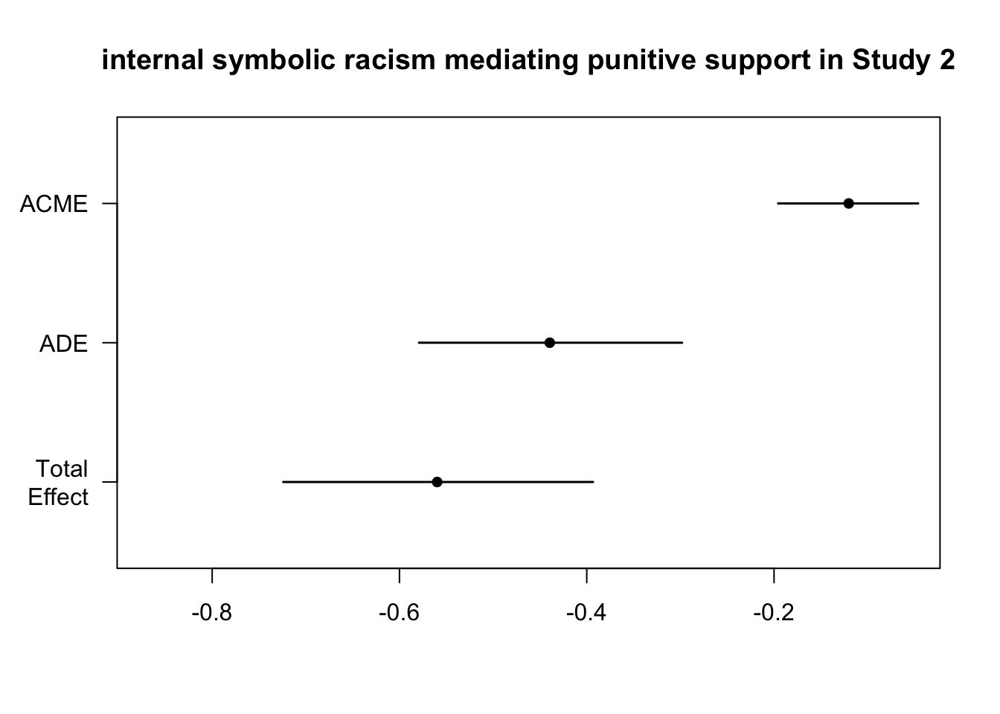
## NULL| Estimate | 95% CI Lower | 95% CI Upper | p-value | |
|---|---|---|---|---|
| ACME | -0.120 | -0.203 | -0.038 | 0.006 |
| ADE | -0.443 | -0.583 | -0.301 | 0.000 |
| Total Effect | -0.562 | -0.716 | -0.396 | 0.000 |
| Prop. Mediated | 0.211 | 0.079 | 0.349 | 0.006 |
## Call: psych::mediate(y = punitive ~ critical + (sri.c) - political -
## female - white - age.c - college - adj_income.c, data = s2,
## main = "internal symbolic racism mediating punitive support in Study 2")
##
## Direct effect estimates (traditional regression) (c') X + M on Y
## punitive* se t df
## Intercept 4.342 0.155 28.09 1034
## critical -0.450 0.072 -6.27 1034
## sri.c 0.765 0.041 18.45 1034
## Prob
## Intercept 0.00000000000000000000000000000000000000000000000000000000000000000000000000000000000000000000000000000000000000000000000000000000165
## critical 0.00000000051669999999999998381151198719655852353849212477143737487494945526123046875000000000000000000000000000000000000000000000000
## sri.c 0.00000000000000000000000000000000000000000000000000000000000000000648899999999999922313246773397335694852044365737728921662675285784
##
## R = 1.04 R2 = 1.07 F = -7391 on 2 and 1034 DF p-value: 1
##
## Total effect estimates (c) (X on Y)
## punitive* se t df
## Intercept 3.576 0.172 20.85 1035
## critical -0.567 0.082 -6.89 1035
## Prob
## Intercept 0.00000000000000000000000000000000000000000000000000000000000000000000000000000000745
## critical 0.00000000000956700000000000073512452111519592111606169471116345448535867035388946533
##
## 'a' effect estimates (X on M)
## sri.c se t df Prob
## Intercept -1.002 0.112 -8.97 1035 0.00000000000000000131
## critical -0.153 0.054 -2.87 1035 0.00425999999999999990
##
## 'b' effect estimates (M on Y controlling for X)
## punitive* se t df
## sri.c 0.765 0.041 18.4 1034
## Prob
## sri.c 0.00000000000000000000000000000000000000000000000000000000000000000649
##
## 'ab' effect estimates (through all mediators)
## punitive* boot sd lower upper
## critical -0.117 -0.118 0.041 -0.2 -0.038
## NULL| Estimate | 95% CI Lower | 95% CI Upper | p-value | |
|---|---|---|---|---|
| ACME | -0.179 | -0.238 | -0.124 | 0.000 |
| ADE | 0.018 | -0.076 | 0.111 | 0.684 |
| Total Effect | -0.161 | -0.262 | -0.061 | 0.000 |
| Prop. Mediated | 1.113 | 0.687 | 2.602 | 0.000 |

## Call: psych::mediate(y = sri.c ~ critical + (punitive) - political -
## female - white - age.c - college - adj_income.c, data = s2,
## main = "Reverse test of internal symbolic racism mediating punitive support in Study 2")
##
## Direct effect estimates (traditional regression) (c') X + M on Y
## sri.c* se t df
## Intercept -2.160 0.115 -18.711 1034
## critical 0.030 0.048 0.636 1034
## punitive 0.324 0.018 18.448 1034
## Prob
## Intercept 0.000000000000000000000000000000000000000000000000000000000000000000165
## critical 0.524599999999999955235807647113688290119171142578125000000000000000000
## punitive 0.000000000000000000000000000000000000000000000000000000000000000006489
##
## R = 0.564 R2 = 0.318 F = 241 on 2 and 1034 DF p-value: 0.0000000000000000000000000000000000000000000000000000000000000000000000000000000000000148
##
## Total effect estimates (c) (X on Y)
## sri.c* se t df Prob
## Intercept -1.002 0.112 -8.97 1035 0.00000000000000000131
## critical -0.153 0.054 -2.87 1035 0.00425999999999999990
##
## 'a' effect estimates (X on M)
## punitive se t df
## Intercept 3.576 0.172 20.85 1035
## critical -0.567 0.082 -6.89 1035
## Prob
## Intercept 0.00000000000000000000000000000000000000000000000000000000000000000000000000000000745
## critical 0.00000000000956700000000000073512452111519592111606169471116345448535867035388946533
##
## 'b' effect estimates (M on Y controlling for X)
## sri.c* se t df
## punitive 0.324 0.018 18.4 1034
## Prob
## punitive 0.00000000000000000000000000000000000000000000000000000000000000000649
##
## 'ab' effect estimates (through all mediators)
## sri.c* boot sd lower upper
## critical -0.184 -0.184 0.03 -0.244 -0.127B.10.2 restorative
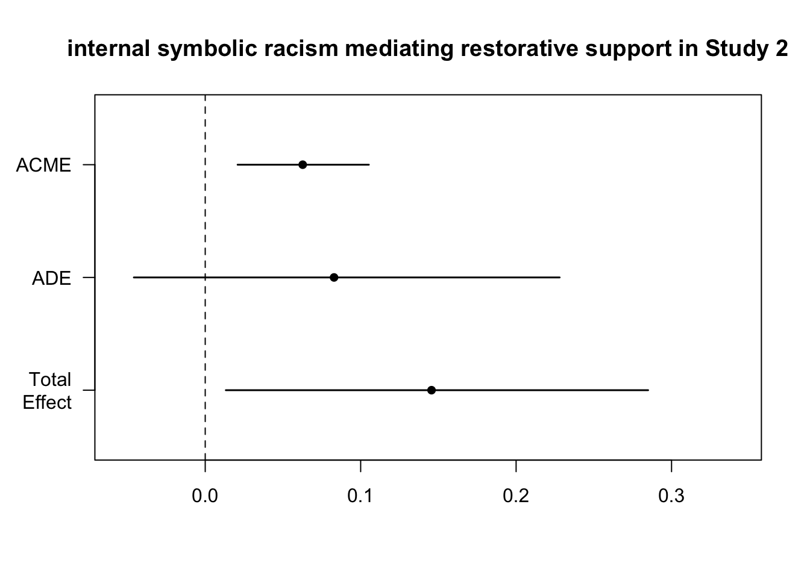
## NULL| Estimate | 95% CI Lower | 95% CI Upper | p-value | |
|---|---|---|---|---|
| ACME | 0.062 | 0.020 | 0.107 | 0.004 |
| ADE | 0.084 | -0.044 | 0.219 | 0.206 |
| Total Effect | 0.146 | 0.003 | 0.283 | 0.042 |
| Prop. Mediated | 0.416 | 0.078 | 2.078 | 0.042 |
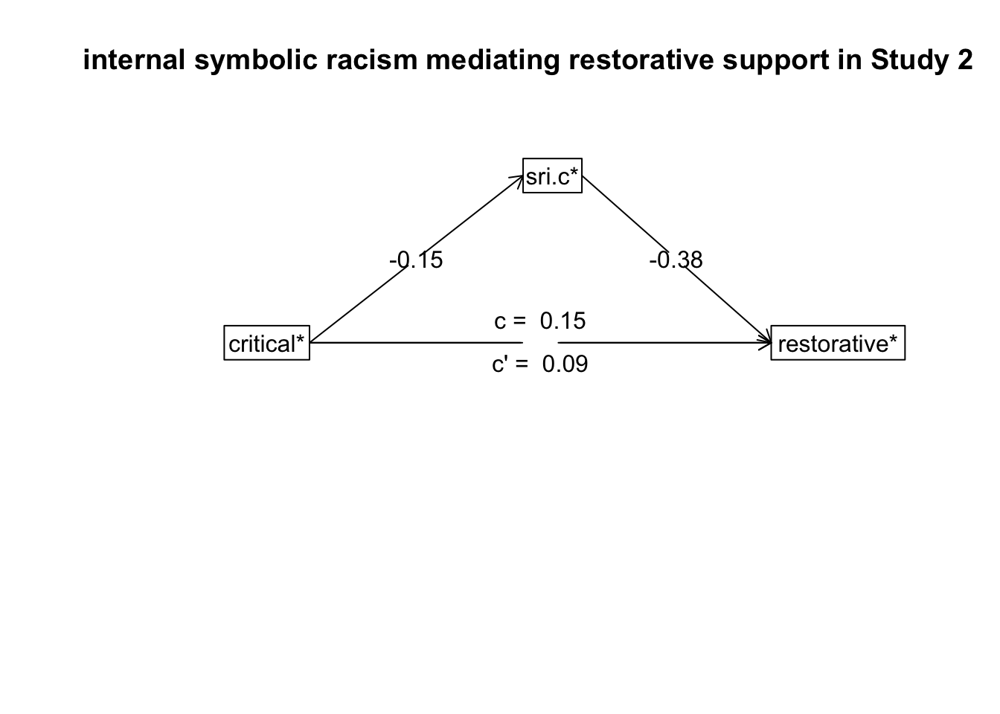
## Call: psych::mediate(y = restorative ~ critical + (sri.c) - political -
## female - white - age.c - college - adj_income.c, data = s2,
## main = "internal symbolic racism mediating restorative support in Study 2")
##
## Direct effect estimates (traditional regression) (c') X + M on Y
## restorative* se t df
## Intercept 5.247 0.145 36.23 1034
## critical 0.088 0.067 1.31 1034
## sri.c -0.380 0.039 -9.80 1034
## Prob
## Intercept 0.00000000000000000000000000000000000000000000000000000000000000000000000000000000000000000000000000000000000000000000000000000000000000000000000000000000000000000000000000000000000000000323
## critical 0.18879999999999999560351682248438009992241859436035156250000000000000000000000000000000000000000000000000000000000000000000000000000000000000000000000000000000000000000000000000000000000000
## sri.c 0.00000000000000000000099579999999999982979773839548668970722956357678715679719160663863064542056235950440168380737304687500000000000000000000000000000000000000000000000000000000000000000000
##
## R = 1.03 R2 = 1.05 F = -9925 on 2 and 1034 DF p-value: 1
##
## Total effect estimates (c) (X on Y)
## restorative* se t df
## Intercept 5.629 0.146 38.6 1035
## critical 0.147 0.070 2.1 1035
## Prob
## Intercept 0.0000000000000000000000000000000000000000000000000000000000000000000000000000000000000000000000000000000000000000000000000000000000000000000000000000000000000000000000000000000000000000000000000000000000957
## critical 0.0361199999999999993294252931264054495841264724731445312500000000000000000000000000000000000000000000000000000000000000000000000000000000000000000000000000000000000000000000000000000000000000000000000000000
##
## 'a' effect estimates (X on M)
## sri.c se t df Prob
## Intercept -1.002 0.112 -8.97 1035 0.00000000000000000131
## critical -0.153 0.054 -2.87 1035 0.00425999999999999990
##
## 'b' effect estimates (M on Y controlling for X)
## restorative* se t df Prob
## sri.c -0.38 0.039 -9.8 1034 0.000000000000000000000996
##
## 'ab' effect estimates (through all mediators)
## restorative* boot sd lower upper
## critical 0.058 0.058 0.021 0.019 0.101
## NULL| Estimate | 95% CI Lower | 95% CI Upper | p-value | |
|---|---|---|---|---|
| ACME | -0.033 | -0.066 | -0.003 | 0.030 |
| ADE | -0.125 | -0.231 | -0.020 | 0.020 |
| Total Effect | -0.158 | -0.271 | -0.049 | 0.004 |
| Prop. Mediated | 0.208 | 0.020 | 0.600 | 0.034 |

## Call: psych::mediate(y = sri.c ~ critical + (restorative) - political -
## female - white - age.c - college - adj_income.c, data = s2,
## main = "Reverse test of internal symbolic racism mediating restorative support in Study 2")
##
## Direct effect estimates (traditional regression) (c') X + M on Y
## sri.c* se t df Prob
## Intercept 0.254 0.167 1.52 1034 0.127900000000000013677948
## critical -0.121 0.051 -2.35 1034 0.018999999999999999528155
## restorative -0.223 0.023 -9.80 1034 0.000000000000000000000996
##
## R = 0.412 R2 = 0.17 F = 106 on 2 and 1034 DF p-value: 0.00000000000000000000000000000000000000000134
##
## Total effect estimates (c) (X on Y)
## sri.c* se t df Prob
## Intercept -1.002 0.112 -8.97 1035 0.00000000000000000131
## critical -0.153 0.054 -2.87 1035 0.00425999999999999990
##
## 'a' effect estimates (X on M)
## restorative se t df
## Intercept 5.629 0.146 38.6 1035
## critical 0.147 0.070 2.1 1035
## Prob
## Intercept 0.0000000000000000000000000000000000000000000000000000000000000000000000000000000000000000000000000000000000000000000000000000000000000000000000000000000000000000000000000000000000000000000000000000000000957
## critical 0.0361199999999999993294252931264054495841264724731445312500000000000000000000000000000000000000000000000000000000000000000000000000000000000000000000000000000000000000000000000000000000000000000000000000000
##
## 'b' effect estimates (M on Y controlling for X)
## sri.c* se t df Prob
## restorative -0.223 0.023 -9.8 1034 0.000000000000000000000996
##
## 'ab' effect estimates (through all mediators)
## sri.c* boot sd lower upper
## critical -0.033 -0.032 0.016 -0.066 -0.001B.11 External SR (mean)
B.11.1 Table
| critical (N=507) |
naive (N=536) |
Overall (N=1043) |
|
|---|---|---|---|
| External Symbolic Racism | |||
| Mean (SD) | 3.22 (1.19) | 3.39 (1.12) | 3.31 (1.15) |
| Median [Min, Max] | 3.20 [1.00, 6.20] | 3.40 [1.00, 6.20] | 3.40 [1.00, 6.20] |
| How much discrimination against Black people do you feel there is in the United States today, limiting their chances to get ahead? (R) | |||
| Mean (SD) | 2.69 (1.22) | 2.80 (1.15) | 2.75 (1.19) |
| Median [Min, Max] | 3.00 [1.00, 5.00] | 3.00 [1.00, 5.00] | 3.00 [1.00, 5.00] |
| Generations of slavery and discrimination have created conditions that make it difficult for Black people to work their way out of the lower class. (R) | |||
| Mean (SD) | 3.58 (1.95) | 3.93 (2.05) | 3.76 (2.01) |
| Median [Min, Max] | 3.00 [1.00, 7.00] | 4.00 [1.00, 7.00] | 3.00 [1.00, 7.00] |
| Over the past few years, Black people have gotten less than they deserve. (R) | |||
| Mean (SD) | 3.50 (1.79) | 3.74 (1.84) | 3.62 (1.82) |
| Median [Min, Max] | 4.00 [1.00, 7.00] | 4.00 [1.00, 7.00] | 4.00 [1.00, 7.00] |
| Has there been a lot of real change in the position of Black people in the past few years? | |||
| Mean (SD) | 2.89 (1.16) | 2.84 (1.11) | 2.86 (1.13) |
| Median [Min, Max] | 3.00 [1.00, 5.00] | 3.00 [1.00, 5.00] | 3.00 [1.00, 5.00] |
| Over the past few years, Black people have gotten more economically than they deserve. | |||
| Mean (SD) | 3.46 (1.83) | 3.65 (1.75) | 3.56 (1.79) |
| Median [Min, Max] | 4.00 [1.00, 7.00] | 4.00 [1.00, 7.00] | 4.00 [1.00, 7.00] |

B.11.3 Distributions


Figure B.19: Distribution of Support for Punitive Policies by Condition in Study 2
B.11.5 ANCOVA
| Term | SS | df | Statistic | p |
|---|---|---|---|---|
| (Intercept) | 43.371 | 1 | 57.350 | 0.000 |
| condition.f | 3.593 | 1 | 4.751 | 0.030 |
| political | 206.991 | 1 | 273.708 | 0.000 |
| female.f | 5.016 | 1 | 6.633 | 0.010 |
| race.f | 15.084 | 8 | 2.493 | 0.011 |
| age.c | 0.453 | 1 | 0.599 | 0.439 |
| edu3.f | 11.115 | 2 | 7.349 | 0.001 |
| adj_income.c | 0.000 | 1 | 0.000 | 0.995 |
| Residuals | 776.667 | 1027 | NA | NA |
| group1 | group2 | estimate | se | df | conf.low | conf.high | statistic | p | p.adj | p.adj.signif |
|---|---|---|---|---|---|---|---|---|---|---|
| Critical | Naive | -0.118 | 0.054 | 1027 | -0.225 | -0.012 | -2.18 | 0.03 | 0.03 |
|
| Condition | EMM | SE | df | Conf.low | Conf.high |
|---|---|---|---|---|---|
| Critical | -0.033 | 0.107 | 1027 | -0.243 | 0.177 |
| Naive | 0.085 | 0.107 | 1027 | -0.125 | 0.295 |

(#fig:figs-sre-emm.plot-s2)Estimated Marginal Means of External Symbolic Racism by Condition in Study 2
B.11.6 OLS
| Dependent variable: | |||
| External Symbolic Racism | |||
| (1) | (2) | (3) | |
| Constant | -0.07 (0.04) | -0.95*** (0.13) | -0.91*** (0.15) |
| condition.fNaive | 0.15* (0.06) | 0.12* (0.05) | 0.04 (0.14) |
| political | 0.25*** (0.01) | 0.24*** (0.02) | |
| female | -0.15* (0.06) | -0.15** (0.06) | |
| race.fLatino | -0.13 (0.18) | -0.14 (0.18) | |
| race.fBlack | -0.35** (0.11) | -0.34** (0.11) | |
| race.fNative American | 0.41 (0.33) | 0.40 (0.34) | |
| race.fAsian | 0.13 (0.14) | 0.12 (0.14) | |
| race.fMiddle Eastern | 0.44 (0.50) | 0.42 (0.51) | |
| race.fPacific Islander | 0.40 (0.51) | 0.39 (0.51) | |
| race.fOther race | -0.43 (0.36) | -0.44 (0.36) | |
| race.fMultiracial | -0.35* (0.17) | -0.35* (0.17) | |
| age | 0.001 (0.002) | 0.001 (0.002) | |
| edu3.fcollege degree | -0.11 (0.07) | -0.12 (0.07) | |
| edu3.fgrad degree | -0.31*** (0.08) | -0.31*** (0.08) | |
| adj_income | 0.00 (0.0000) | -0.00 (0.0000) | |
| condition.fNaive:political | 0.02 (0.03) | ||
| Observations | 1,043 | 1,043 | 1,043 |
| R2 | 0.01 | 0.25 | 0.25 |
| Adjusted R2 | 0.004 | 0.24 | 0.24 |
| Residual Std. Error | 1.00 (df = 1041) | 0.87 (df = 1027) | 0.87 (df = 1026) |
| F Statistic | 5.53* (df = 1; 1041) | 23.40*** (df = 15; 1027) | 21.90*** (df = 16; 1026) |
| Note: | p<0.05; p<0.01; p<0.001 | ||

B.12 Mediation by External Symbolic Racism
B.12.1 punitive
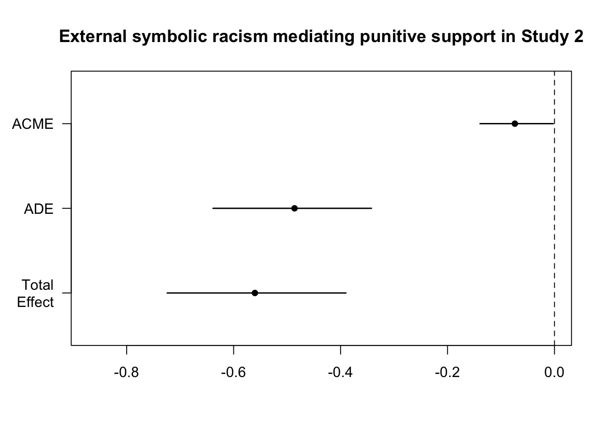
## NULL| Estimate | 95% CI Lower | 95% CI Upper | p-value | |
|---|---|---|---|---|
| ACME | -0.074 | -0.146 | -0.008 | 0.022 |
| ADE | -0.487 | -0.629 | -0.334 | 0.000 |
| Total Effect | -0.561 | -0.718 | -0.381 | 0.000 |
| Prop. Mediated | 0.130 | 0.015 | 0.247 | 0.022 |

## Call: psych::mediate(y = punitive ~ critical + (sre.c) - political -
## female - white - age.c - college - adj_income.c, data = s2,
## main = "External symbolic racism mediating punitive support in Study 2")
##
## Direct effect estimates (traditional regression) (c') X + M on Y
## punitive* se t df
## Intercept 4.146 0.160 25.86 1034
## critical -0.490 0.075 -6.54 1034
## sre.c 0.635 0.043 14.91 1034
## Prob
## Intercept 0.00000000000000000000000000000000000000000000000000000000000000000000000000000000000000000000000000000000000000000394
## critical 0.00000000009868999999999999731021336737057589316712835625367006286978721618652343750000000000000000000000000000000000
## sre.c 0.00000000000000000000000000000000000000000000107199999999999995309029888719183880800165426055523780519428259381798177
##
## R = 1.04 R2 = 1.08 F = -6801 on 2 and 1034 DF p-value: 1
##
## Total effect estimates (c) (X on Y)
## punitive* se t df
## Intercept 3.576 0.172 20.85 1035
## critical -0.567 0.082 -6.89 1035
## Prob
## Intercept 0.00000000000000000000000000000000000000000000000000000000000000000000000000000000745
## critical 0.00000000000956700000000000073512452111519592111606169471116345448535867035388946533
##
## 'a' effect estimates (X on M)
## sre.c se t df Prob
## Intercept -0.897 0.114 -7.90 1035 0.00000000000000713
## critical -0.122 0.055 -2.25 1035 0.02499000000000000
##
## 'b' effect estimates (M on Y controlling for X)
## punitive* se t df
## sre.c 0.635 0.043 14.9 1034
## Prob
## sre.c 0.00000000000000000000000000000000000000000000107
##
## 'ab' effect estimates (through all mediators)
## punitive* boot sd lower upper
## critical -0.078 -0.077 0.035 -0.147 -0.01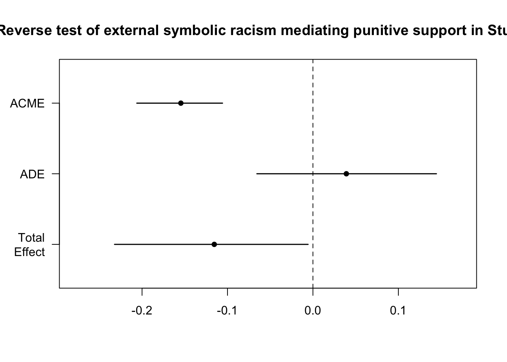
## NULL| Estimate | 95% CI Lower | 95% CI Upper | p-value | |
|---|---|---|---|---|
| ACME | -0.155 | -0.206 | -0.108 | 0.000 |
| ADE | 0.036 | -0.063 | 0.134 | 0.484 |
| Total Effect | -0.119 | -0.225 | -0.013 | 0.036 |
| Prop. Mediated | 1.271 | 0.637 | 4.982 | 0.036 |

## Call: psych::mediate(y = sre.c ~ critical + (punitive) - political -
## female - white - age.c - college - adj_income.c, data = s2,
## main = "Reverse test of external symbolic racism mediating punitive support in Study 2")
##
## Direct effect estimates (traditional regression) (c') X + M on Y
## sre.c* se t df
## Intercept -1.894 0.123 -15.413 1034
## critical 0.036 0.051 0.705 1034
## punitive 0.279 0.019 14.912 1034
## Prob
## Intercept 0.0000000000000000000000000000000000000000000000021
## critical 0.4808999999999999941380224299791734665632247924805
## punitive 0.0000000000000000000000000000000000000000000010720
##
## R = 0.486 R2 = 0.236 F = 160 on 2 and 1034 DF p-value: 0.000000000000000000000000000000000000000000000000000000000000371
##
## Total effect estimates (c) (X on Y)
## sre.c* se t df Prob
## Intercept -0.897 0.114 -7.90 1035 0.00000000000000713
## critical -0.122 0.055 -2.25 1035 0.02499000000000000
##
## 'a' effect estimates (X on M)
## punitive se t df
## Intercept 3.576 0.172 20.85 1035
## critical -0.567 0.082 -6.89 1035
## Prob
## Intercept 0.00000000000000000000000000000000000000000000000000000000000000000000000000000000745
## critical 0.00000000000956700000000000073512452111519592111606169471116345448535867035388946533
##
## 'b' effect estimates (M on Y controlling for X)
## sre.c* se t df
## punitive 0.279 0.019 14.9 1034
## Prob
## punitive 0.00000000000000000000000000000000000000000000107
##
## 'ab' effect estimates (through all mediators)
## sre.c* boot sd lower upper
## critical -0.158 -0.158 0.025 -0.209 -0.109B.12.2 restorative
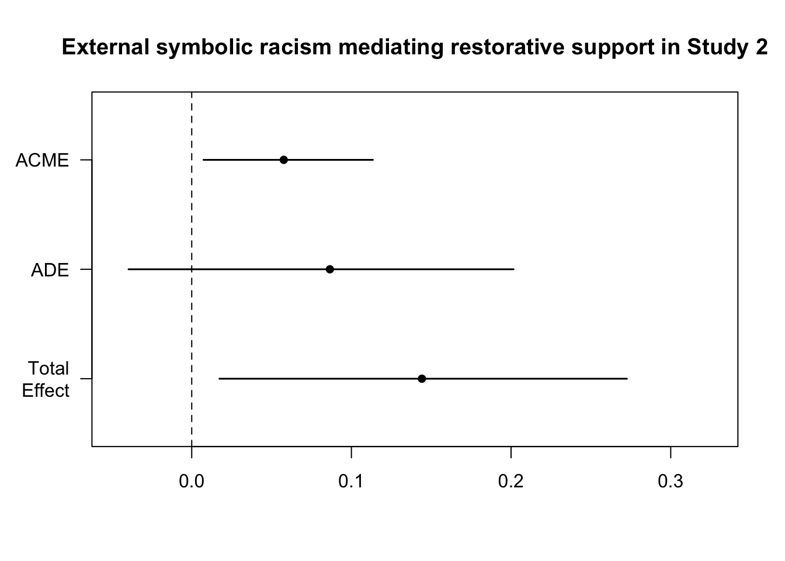
## NULL| Estimate | 95% CI Lower | 95% CI Upper | p-value | |
|---|---|---|---|---|
| ACME | 0.057 | 0.006 | 0.110 | 0.036 |
| ADE | 0.090 | -0.034 | 0.216 | 0.148 |
| Total Effect | 0.147 | 0.011 | 0.289 | 0.032 |
| Prop. Mediated | 0.384 | -0.016 | 1.939 | 0.056 |

## Call: psych::mediate(y = restorative ~ critical + (sre.c) - political -
## female - white - age.c - college - adj_income.c, data = s2,
## main = "External symbolic racism mediating restorative support in Study 2")
##
## Direct effect estimates (traditional regression) (c') X + M on Y
## restorative* se t df
## Intercept 5.190 0.139 37.38 1034
## critical 0.087 0.065 1.34 1034
## sre.c -0.488 0.037 -13.24 1034
## Prob
## Intercept 0.0000000000000000000000000000000000000000000000000000000000000000000000000000000000000000000000000000000000000000000000000000000000000000000000000000000000000000000000000000000000000000000000000373
## critical 0.1801999999999999990674126593148685060441493988037109375000000000000000000000000000000000000000000000000000000000000000000000000000000000000000000000000000000000000000000000000000000000000000000000
## sre.c 0.0000000000000000000000000000000000004660999999999999915948691491285841173337952760725461077683294697667892322240813850332586225897781029292588073076331056654453277587890625000000000000000000000000
##
## R = 1.02 R2 = 1.05 F = -10585 on 2 and 1034 DF p-value: 1
##
## Total effect estimates (c) (X on Y)
## restorative* se t df
## Intercept 5.629 0.146 38.6 1035
## critical 0.147 0.070 2.1 1035
## Prob
## Intercept 0.0000000000000000000000000000000000000000000000000000000000000000000000000000000000000000000000000000000000000000000000000000000000000000000000000000000000000000000000000000000000000000000000000000000000957
## critical 0.0361199999999999993294252931264054495841264724731445312500000000000000000000000000000000000000000000000000000000000000000000000000000000000000000000000000000000000000000000000000000000000000000000000000000
##
## 'a' effect estimates (X on M)
## sre.c se t df Prob
## Intercept -0.897 0.114 -7.90 1035 0.00000000000000713
## critical -0.122 0.055 -2.25 1035 0.02499000000000000
##
## 'b' effect estimates (M on Y controlling for X)
## restorative* se t df Prob
## sre.c -0.488 0.037 -13.2 1034 0.000000000000000000000000000000000000466
##
## 'ab' effect estimates (through all mediators)
## restorative* boot sd lower upper
## critical 0.06 0.06 0.028 0.006 0.115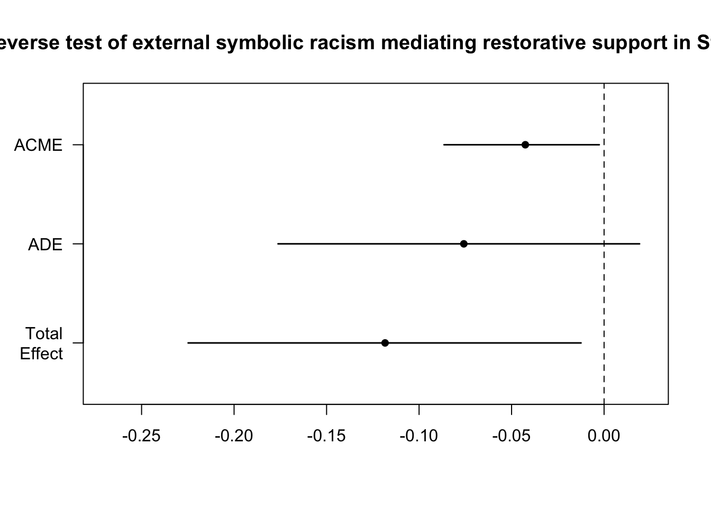
## NULL| Estimate | 95% CI Lower | 95% CI Upper | p-value | |
|---|---|---|---|---|
| ACME | -0.044 | -0.086 | -0.006 | 0.020 |
| ADE | -0.075 | -0.177 | 0.026 | 0.120 |
| Total Effect | -0.119 | -0.228 | -0.017 | 0.032 |
| Prop. Mediated | 0.363 | 0.006 | 1.233 | 0.048 |

## Call: psych::mediate(y = sre.c ~ critical + (restorative) - political -
## female - white - age.c - college - adj_income.c, data = s2,
## main = "Reverse test of external symbolic racism mediating restorative support in Study 2")
##
## Direct effect estimates (traditional regression) (c') X + M on Y
## sre.c* se t df Prob
## Intercept 0.772 0.164 4.70 1034 0.000002900999999999999838019328068927649
## critical -0.079 0.051 -1.56 1034 0.119099999999999997535304885332152480260
## restorative -0.297 0.022 -13.24 1034 0.000000000000000000000000000000000000466
##
## R = 0.454 R2 = 0.206 F = 134 on 2 and 1034 DF p-value: 0.000000000000000000000000000000000000000000000000000146
##
## Total effect estimates (c) (X on Y)
## sre.c* se t df Prob
## Intercept -0.897 0.114 -7.90 1035 0.00000000000000713
## critical -0.122 0.055 -2.25 1035 0.02499000000000000
##
## 'a' effect estimates (X on M)
## restorative se t df
## Intercept 5.629 0.146 38.6 1035
## critical 0.147 0.070 2.1 1035
## Prob
## Intercept 0.0000000000000000000000000000000000000000000000000000000000000000000000000000000000000000000000000000000000000000000000000000000000000000000000000000000000000000000000000000000000000000000000000000000000957
## critical 0.0361199999999999993294252931264054495841264724731445312500000000000000000000000000000000000000000000000000000000000000000000000000000000000000000000000000000000000000000000000000000000000000000000000000000
##
## 'b' effect estimates (M on Y controlling for X)
## sre.c* se t df Prob
## restorative -0.297 0.022 -13.2 1034 0.000000000000000000000000000000000000466
##
## 'ab' effect estimates (through all mediators)
## sre.c* boot sd lower upper
## critical -0.044 -0.044 0.021 -0.086 -0.003B.13 Policy Factor Analyses
B.13.1 All Policies
- PUN_COPS: More police on the streets
- PUN_JAILTIME: Longer jail terms for those convicted of violent crimes
- PUN_PENALTY: Increase criminal penalties for non-violent crimes
- PUN_PRISONS: More prisons and fewer opportunities for parole
- REST_BANBOX: Remove criminal-history questions from employment applications
- REST_YOUTH: More community programs for young people
- REST_JOBS: Job programs for people in the inner-cities
- REST_FEDAID: More federal assistance to the poor
## Kaiser-Meyer-Olkin factor adequacy
## Call: psych::KMO(r = policies_cormat_s2)
## Overall MSA = 0.76
## MSA for each item =
## pun_cops pun_jailtime pun_penalty pun_prisons rest_banbox rest_youth
## 0.82 0.82 0.78 0.77 0.79 0.69
## rest_jobs rest_fedaid
## 0.70 0.77## $chisq
## [1] 3351
##
## $p.value
## [1] 0
##
## $df
## [1] 28## [1] 0.0397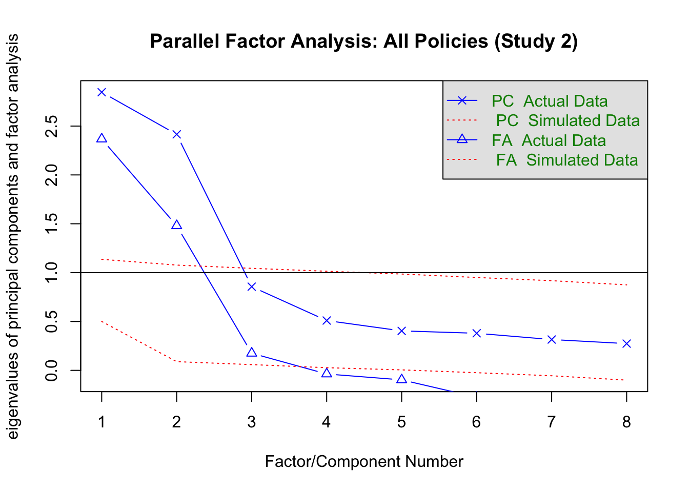
## Parallel analysis suggests that the number of factors = 3 and the number of components = 2## Factor Analysis using method = minres
## Call: fa(r = policies_vars_s2, nfactors = 2, rotate = "none")
## Standardized loadings (pattern matrix) based upon correlation matrix
## MR1 MR2 h2 u2 com
## pun_cops 0.66 0.31 0.54 0.46 1.4
## pun_jailtime 0.68 0.36 0.60 0.40 1.5
## pun_penalty 0.75 0.17 0.59 0.41 1.1
## pun_prisons 0.77 0.09 0.61 0.39 1.0
## rest_banbox -0.35 0.33 0.23 0.77 2.0
## rest_youth -0.18 0.83 0.72 0.28 1.1
## rest_jobs -0.22 0.79 0.67 0.33 1.2
## rest_fedaid -0.38 0.58 0.48 0.52 1.7
##
## MR1 MR2
## SS loadings 2.41 2.03
## Proportion Var 0.30 0.25
## Cumulative Var 0.30 0.55
## Proportion Explained 0.54 0.46
## Cumulative Proportion 0.54 1.00
##
## Mean item complexity = 1.4
## Test of the hypothesis that 2 factors are sufficient.
##
## The degrees of freedom for the null model are 28 and the objective function was 3.23 with Chi Square of 3351
## The degrees of freedom for the model are 13 and the objective function was 0.21
##
## The root mean square of the residuals (RMSR) is 0.05
## The df corrected root mean square of the residuals is 0.07
##
## The harmonic number of observations is 1043 with the empirical chi square 133 with prob < 0.00000000000000000000064
## The total number of observations was 1043 with Likelihood Chi Square = 219 with prob < 0.0000000000000000000000000000000000000021
##
## Tucker Lewis Index of factoring reliability = 0.867
## RMSEA index = 0.123 and the 90 % confidence intervals are 0.109 0.138
## BIC = 128
## Fit based upon off diagonal values = 0.98
## Measures of factor score adequacy
## MR1 MR2
## Correlation of (regression) scores with factors 0.92 0.92
## Multiple R square of scores with factors 0.85 0.85
## Minimum correlation of possible factor scores 0.70 0.70##
## Loadings:
## MR1 MR2
## pun_cops 0.726
## pun_jailtime 0.760
## pun_penalty 0.767
## pun_prisons 0.764
## rest_youth 0.846
## rest_jobs 0.816
## rest_fedaid 0.670
## rest_banbox
##
## MR1 MR2
## SS loadings 2.371 2.060
## Proportion Var 0.296 0.257
## Cumulative Var 0.296 0.554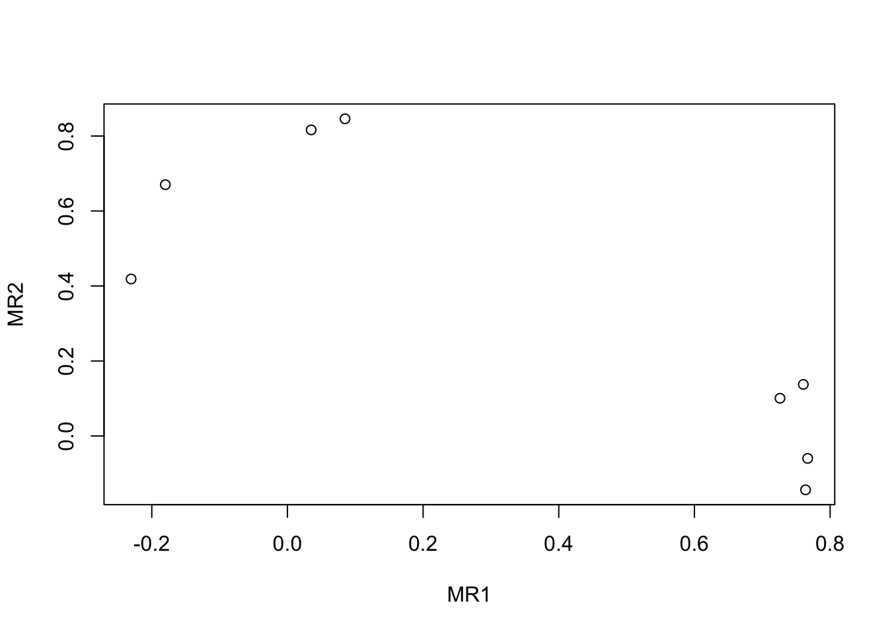
## integer(0)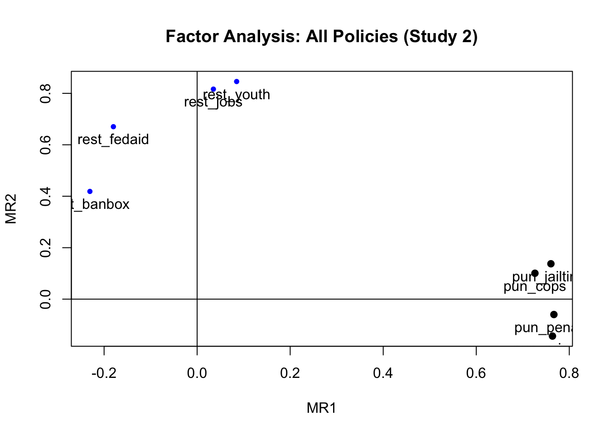
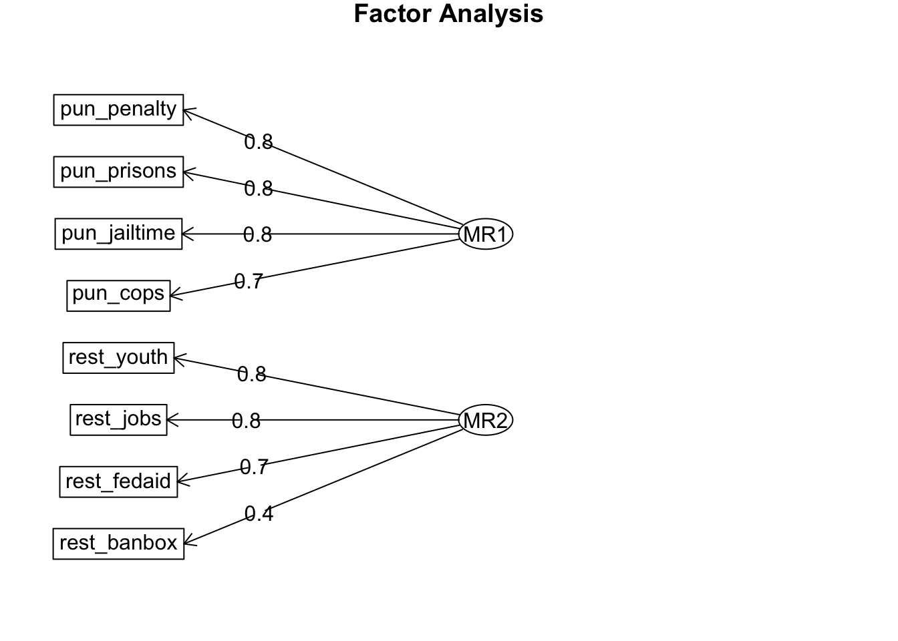
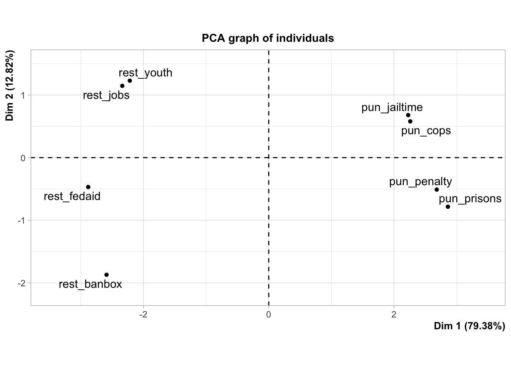
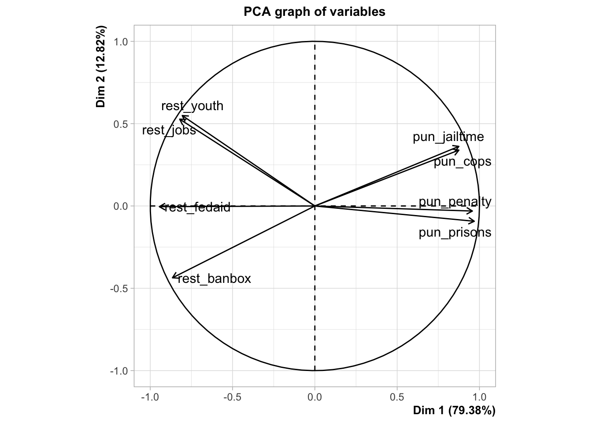
B.13.2 Punitive
## Kaiser-Meyer-Olkin factor adequacy
## Call: psych::KMO(r = pun_cormat_s2)
## Overall MSA = 0.79
## MSA for each item =
## pun_cops pun_jailtime pun_penalty pun_prisons
## 0.82 0.81 0.76 0.77## $chisq
## [1] 1662
##
## $p.value
## [1] 0
##
## $df
## [1] 6## [1] 0.202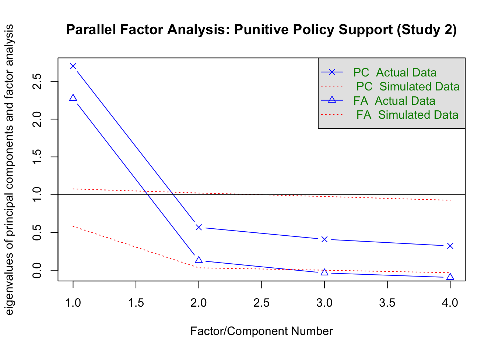
## Parallel analysis suggests that the number of factors = 2 and the number of components = 1## Factor Analysis using method = minres
## Call: fa(r = punitive_vars_s2, nfactors = 2, rotate = "none")
## Standardized loadings (pattern matrix) based upon correlation matrix
## MR1 MR2 h2 u2 com
## pun_cops 0.73 0.28 0.61 0.39 1.3
## pun_jailtime 0.73 0.19 0.58 0.42 1.1
## pun_penalty 0.78 -0.14 0.63 0.37 1.1
## pun_prisons 0.81 -0.29 0.75 0.25 1.2
##
## MR1 MR2
## SS loadings 2.34 0.22
## Proportion Var 0.59 0.05
## Cumulative Var 0.59 0.64
## Proportion Explained 0.92 0.08
## Cumulative Proportion 0.92 1.00
##
## Mean item complexity = 1.2
## Test of the hypothesis that 2 factors are sufficient.
##
## The degrees of freedom for the null model are 6 and the objective function was 1.6 with Chi Square of 1662
## The degrees of freedom for the model are -1 and the objective function was 0
##
## The root mean square of the residuals (RMSR) is 0
## The df corrected root mean square of the residuals is NA
##
## The harmonic number of observations is 1043 with the empirical chi square 0 with prob < NA
## The total number of observations was 1043 with Likelihood Chi Square = 0 with prob < NA
##
## Tucker Lewis Index of factoring reliability = 1
## Fit based upon off diagonal values = 1
## Measures of factor score adequacy
## MR1 MR2
## Correlation of (regression) scores with factors 0.93 0.63
## Multiple R square of scores with factors 0.87 0.39
## Minimum correlation of possible factor scores 0.74 -0.21##
## Loadings:
## MR1 MR2
## pun_penalty 0.657
## pun_prisons 0.898
## pun_cops 0.811
## pun_jailtime 0.664
##
## MR1 MR2
## SS loadings 1.252 1.129
## Proportion Var 0.313 0.282
## Cumulative Var 0.313 0.595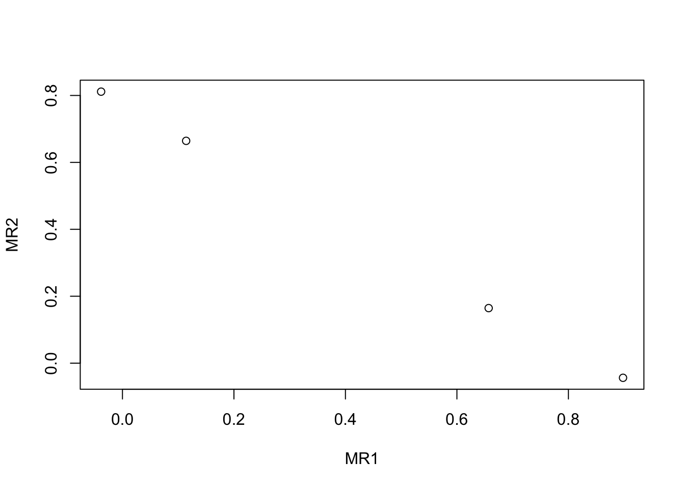
## integer(0)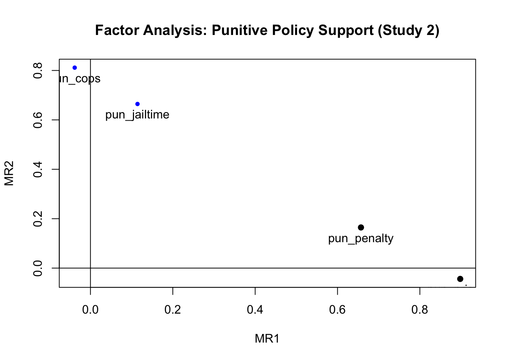
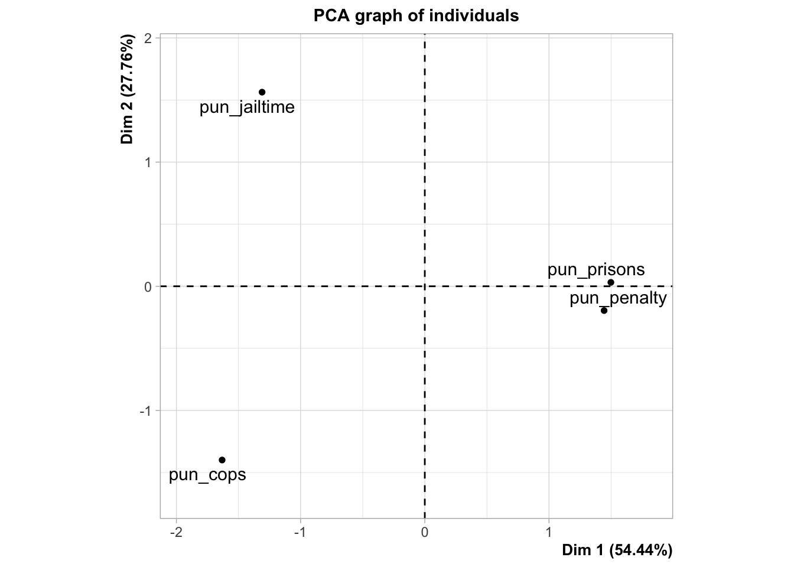
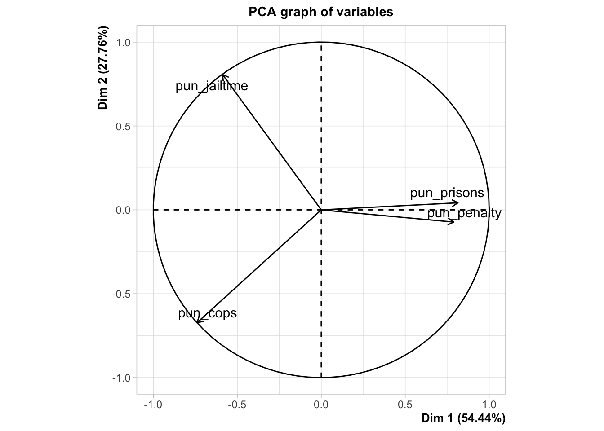
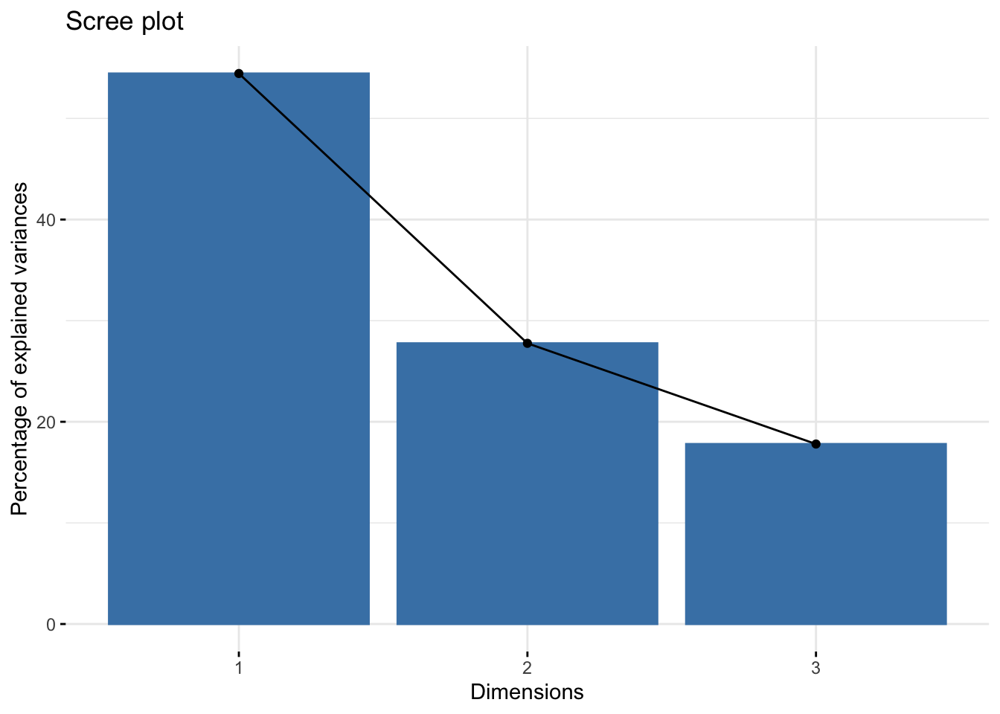
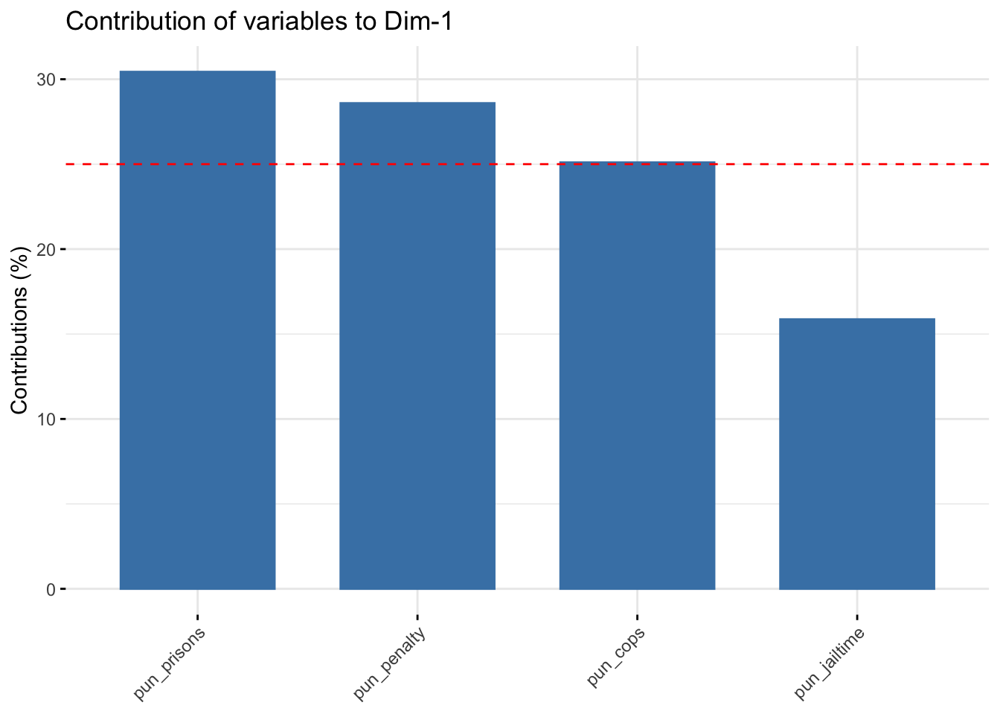
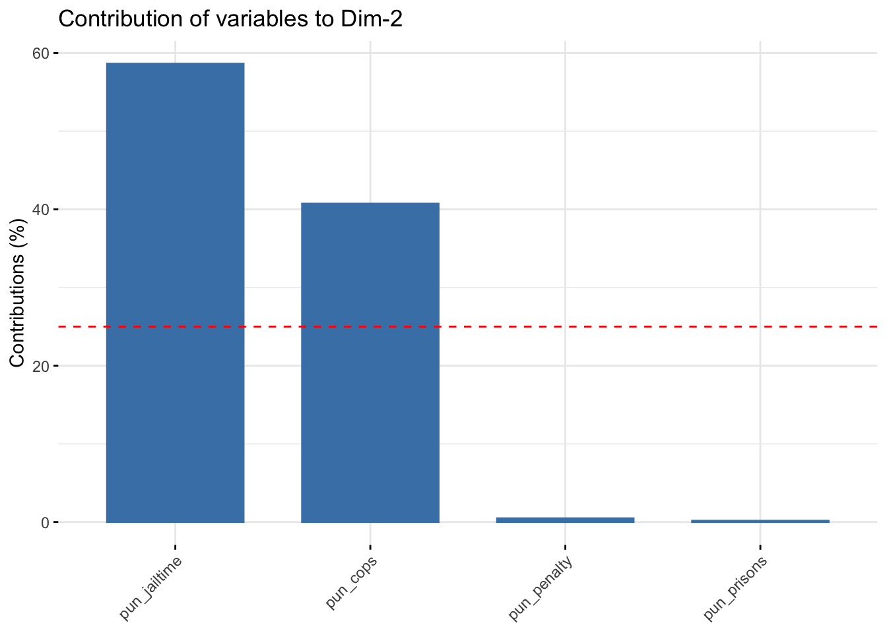
Exploratory
B.13.4 Attitudes Toward Police Experts
The article you read included two perspectives on how to address gun violence in poor neighborhoods:
- Police officials recommended increased law enforcement, stronger penalties, more aggressive prosecutions, police technology, and partnering with neighborhoods for crime tips.
- Policy researchers recommended increasing investments in housing, local business, education, and police-community relations.
In your opinion, when it comes to deciding how to address gun violence, how TRUSTWORTHY are police officials?
In your opinion, when it comes to deciding how to address gun violence, how QUALIFIED are police officials?
B.13.5 Attitudes Toward Policy Experts
The article you read included two perspectives on how to address gun violence in poor neighborhoods:
- Police officials recommended increased law enforcement, stronger penalties, more aggressive prosecutions, police technology, and partnering with neighborhoods for crime tips.
- Policy researchers recommended increasing investments in housing, local business, education, and police-community relations.
In your opinion, when it comes to deciding how to address gun violence, how TRUSTWORTHY are policy researchers?
In your opinion, when it comes to deciding how to address gun violence, how QUALIFIED are policy researchers?
B.13.6 Argument Quality
The article you read includes the perspective that…
“in order to reduce the gun violence problem in poor, (urban/inner-city) neighborhoods of color it is necessary to repair the economic devastation of those communities that was caused by decades of (bad/racist) policies.”
According to that perspective, investment in affordable housing, support for local businesses, and public education (among other things) are needed in order to improve gun violence in those neighborhoods.
In your opinion, how convincing was the argument for that perspective?
In your opinion, how well-supported was that perspective by facts mentioned in the article?
B.13.7 NFC
- Scale: Not at all (1) Slightly (2) Somewhat (3) A great deal (4) Almost completely (5)
- I prefer complex to simple problems. (NFC_SIMPLE)
- I like to have the responsibility of handling a situation that requires a lot of thinking. (NFC_RESP)
- Thinking is not my idea of fun. (NFC_NOTFUN)
- I would rather do something that requires little thought than something that is sure to challenge my thinking abilities. (NFC_NOCHALLENGE)
- I try to anticipate and avoid situations where there is a likely chance that I will have to think in depth about something. (NFC_AVOID)
- I find satisfaction in deliberating hard for long hours. (NFC_SATISFY)
- I only think as hard as I have to. (NFC_ONLY)
- I prefer to think about small daily projects to long-term ones. (NFC_DAILY)
- I like tasks that require little thought once I’ve learned them. (NFC_LITTLE)
- The idea of relying on thought to make my way to the top appeals to me. (NFC_RELY)
- I really enjoy a task that involves coming up with new solutions to problems. (NFC_SOLUTIONS)
- Learning new ways to think doesn’t excite me. (NFC_UNEXCITE)
- I prefer my life to be filled with puzzles that I must solve. (NFC_PUZZLES)
- The notion of thinking abstractly is appealing to me. (NFC_ABSTRACT)
- I would prefer a task that is intellectual, difficult, and important to one that is somewhat important but does not require much thought. (NFC_DIFFICULT)
- I feel relief rather than satisfaction after completing a task that required a lot of mental effort. (NFC_RELIEF)
- It’s enough for me that something gets the job done; I don’t care how or why it works. (NFC_DONE)
- I usually end up deliberating about issues even when they do not affect me personally. (NFC_DELIBERATE)
B.14 Summary
| critical (N=507) |
naive (N=536) |
Overall (N=1043) |
|
|---|---|---|---|
| Punitive Policy Support | |||
| Mean (SD) | 4.16 (1.43) | 4.74 (1.38) | 4.46 (1.44) |
| Median [Min, Max] | 4.25 [1.00, 7.00] | 4.75 [1.00, 7.00] | 4.50 [1.00, 7.00] |
| Restorative Policy Support | |||
| Mean (SD) | 4.99 (1.25) | 4.84 (1.17) | 4.92 (1.21) |
| Median [Min, Max] | 5.25 [1.00, 7.00] | 5.00 [1.00, 7.00] | 5.00 [1.00, 7.00] |
| Symbolic Racism | |||
| Mean (SD) | 3.55 (1.22) | 3.75 (1.15) | 3.65 (1.19) |
| Median [Min, Max] | 3.70 [1.00, 6.40] | 3.80 [1.00, 6.40] | 3.70 [1.00, 6.40] |
| External Symbolic Racism | |||
| Mean (SD) | 3.22 (1.19) | 3.39 (1.12) | 3.31 (1.15) |
| Median [Min, Max] | 3.20 [1.00, 6.20] | 3.40 [1.00, 6.20] | 3.40 [1.00, 6.20] |
| Internal Symbolic Racism | |||
| Mean (SD) | 3.88 (1.38) | 4.11 (1.32) | 4.00 (1.35) |
| Median [Min, Max] | 4.00 [1.00, 6.60] | 4.20 [1.00, 6.60] | 4.00 [1.00, 6.60] |
| Perceived inequality | |||
| Mean (SD) | 4.44 (1.56) | 4.34 (1.50) | 4.39 (1.53) |
| Median [Min, Max] | 4.56 [1.00, 7.00] | 4.44 [1.00, 7.00] | 4.56 [1.00, 7.00] |
| Egalitarianism | |||
| Mean (SD) | 5.55 (1.15) | 5.47 (1.08) | 5.51 (1.12) |
| Median [Min, Max] | 5.60 [1.60, 7.00] | 5.40 [2.20, 7.00] | 5.60 [1.60, 7.00] |
| Dependent variable: | |||
| Punitive | Restorative | Racism | |
| (1) | (2) | (3) | |
| Constant | -0.98*** (0.13) | 5.89*** (0.17) | -0.92*** (0.13) |
| condition.f1 | -0.20*** (0.03) | ||
| condition.fNaive | -0.15* (0.07) | 0.15** (0.05) | |
| political | 0.18*** (0.02) | -0.23*** (0.02) | 0.27*** (0.01) |
| female | -0.06 (0.06) | 0.20** (0.07) | -0.19*** (0.06) |
| race.f1 | 0.26* (0.11) | ||
| race.f2 | 0.39* (0.20) | ||
| race.f3 | -0.0004 (0.14) | ||
| race.f4 | 0.74* (0.33) | ||
| race.f5 | 0.28 (0.16) | ||
| race.f6 | -0.95* (0.48) | ||
| race.f7 | -0.44 (0.48) | ||
| race.f8 | -0.22 (0.35) | ||
| age.c | -0.04 (0.03) | ||
| edu3.f1 | 0.03 (0.05) | ||
| edu3.f2 | 0.01 (0.04) | ||
| adj_income.c | 0.005 (0.03) | ||
| race.fLatino | 0.21 (0.24) | -0.15 (0.18) | |
| race.fBlack | -0.01 (0.14) | -0.46*** (0.11) | |
| race.fNative American | -0.40 (0.43) | 0.55 (0.33) | |
| race.fAsian | -0.08 (0.18) | 0.15 (0.13) | |
| race.fMiddle Eastern | -1.38* (0.65) | -0.25 (0.49) | |
| race.fPacific Islander | -0.53 (0.65) | 0.01 (0.49) | |
| race.fOther race | -1.05* (0.46) | -0.58 (0.35) | |
| race.fMultiracial | -0.15 (0.22) | -0.14 (0.17) | |
| age | 0.002 (0.002) | -0.001 (0.002) | |
| edu3.fcollege degree | -0.03 (0.09) | -0.12 (0.07) | |
| edu3.fgrad degree | 0.29** (0.10) | -0.26** (0.08) | |
| adj_income | -0.0000** (0.0000) | -0.0000 (0.0000) | |
| Observations | 1,043 | 1,043 | 1,043 |
| R2 | 0.17 | 0.16 | 0.29 |
| Adjusted R2 | 0.16 | 0.15 | 0.28 |
| Residual Std. Error (df = 1027) | 0.92 | 1.12 | 0.85 |
| F Statistic (df = 15; 1027) | 14.00*** | 13.30*** | 28.50*** |
| Note: | p<0.05; p<0.01; p<0.001 | ||
| Dependent variable: | |||
| Punitive | Restorative | Racism | |
| (1) | (2) | (3) | |
| Constant | -0.98*** (0.13) | 5.89*** (0.17) | -0.92*** (0.13) |
| t = -7.41 | t = 34.40 | t = -7.09 | |
| p = 0.00 | p = 0.00 | p = 0.00 | |
| condition.f1 | -0.20*** (0.03) | ||
| t = -6.83 | |||
| p = 0.00 | |||
| condition.fNaive | -0.15* (0.07) | 0.15** (0.05) | |
| t = -2.10 | t = 2.80 | ||
| p = 0.04 | p = 0.01 | ||
| political | 0.18*** (0.02) | -0.23*** (0.02) | 0.27*** (0.01) |
| t = 11.50 | t = -12.20 | t = 18.50 | |
| p = 0.00 | p = 0.00 | p = 0.00 | |
| edu3.f1 | 0.03 (0.05) | ||
| t = 0.59 | |||
| p = 0.56 | |||
| edu3.f2 | 0.01 (0.04) | ||
| t = 0.29 | |||
| p = 0.78 | |||
| age | 0.002 (0.002) | -0.001 (0.002) | |
| t = 1.12 | t = -0.36 | ||
| p = 0.27 | p = 0.72 | ||
| edu3.fgrad degree | 0.29** (0.10) | -0.26** (0.08) | |
| t = 2.77 | t = -3.30 | ||
| p = 0.01 | p = 0.002 | ||
| adj_income | -0.0000** (0.0000) | -0.0000 (0.0000) | |
| t = -2.65 | t = -0.38 | ||
| p = 0.01 | p = 0.71 | ||
| Observations | 1,043 | 1,043 | 1,043 |
| R2 | 0.17 | 0.16 | 0.29 |
| Adjusted R2 | 0.16 | 0.15 | 0.28 |
| Residual Std. Error (df = 1027) | 0.92 | 1.12 | 0.85 |
| F Statistic (df = 15; 1027) | 14.00*** (p = 0.00) | 13.30*** (p = 0.00) | 28.50*** (p = 0.00) |
| Note: | p<0.05; p<0.01; p<0.001 | ||
| critical (N=507) |
naive (N=536) |
Overall (N=1043) |
|
|---|---|---|---|
| Stereotypes about Urban Gun Violence | |||
| Mean (SD) | 4.69 (1.54) | 5.02 (1.32) | 4.86 (1.44) |
| Median [Min, Max] | 4.67 [1.00, 7.00] | 5.00 [1.00, 7.00] | 5.00 [1.00, 7.00] |
| Stereotypes about Urban Gun Violence | |||
| Mean (SD) | 4.74 (1.44) | 5.01 (1.27) | 4.88 (1.36) |
| Median [Min, Max] | 5.00 [1.00, 7.00] | 5.00 [1.00, 7.00] | 5.00 [1.00, 7.00] |
| Perceived inequality | |||
| Mean (SD) | 4.44 (1.56) | 4.34 (1.50) | 4.39 (1.53) |
| Median [Min, Max] | 4.56 [1.00, 7.00] | 4.44 [1.00, 7.00] | 4.56 [1.00, 7.00] |
| Egalitarianism | |||
| Mean (SD) | 5.55 (1.15) | 5.47 (1.08) | 5.51 (1.12) |
| Median [Min, Max] | 5.60 [1.60, 7.00] | 5.40 [2.20, 7.00] | 5.60 [1.60, 7.00] |